← 回股市觀察
逐檔技術線型分析
2026/10/20 · 成交金額上市前 50 名 ＋ 上櫃前 20 名（共 70 檔）· 公開資料整理
46292.93
加權指數 -529.15 點（-1.13%）
269 / 701
上市個股上漲／下跌家數
上漲 25.0% · 下跌 65.3% · 持平 9.7%（共 1074 檔）
316 / 451
上櫃個股上漲／下跌家數
上漲 36.4% · 下跌 51.9% · 持平 11.7%（共 869 檔）
統計範圍：當日成交金額上市前 50 名 ＋ 上櫃前 20 名（共 70 檔，皆為 4 位數代號的個股，不含 ETF／權證）。
兩個市場各自取前 N 名後合併呈現，卡片上標示市場別（上市／上櫃），清單也附市場分布。
條件統計：上市 上升趨勢：底底高 ＋ 頭頭高 8 檔、突破頸線 3 檔、底底高 17 檔、頭頭高 20 檔、站上月線 18 檔、月線向上 37 檔、外資買超 12 檔、量價攻擊（收紅＋大量） 9 檔、跌破前低（線型轉弱） 18 檔；上櫃 上升趨勢：底底高 ＋ 頭頭高 3 檔、突破頸線 3 檔、底底高 6 檔、頭頭高 9 檔、站上月線 5 檔、月線向上 14 檔、外資買超 7 檔、量價攻擊（收紅＋大量） 2 檔、跌破前低（線型轉弱） 9 檔。
五項全滿足（底底高＋頭頭高＋站上月線＋月線向上＋5 日線向上）：上市 台表科、騰輝電子-KY、今國光、矽力*-KY；上櫃 富喬、凱崴。
資料日 2026/10/20。籌碼：上市為證交所三大法人、上櫃為櫃買中心三大法人；上櫃另附融資餘額。
每一檔都附上 K 線圖與線型說明：黃圈是轉折低點、粉圈是轉折高點、藍線是月線。
圖上兩條水平虛線、左側標數值：高點頸線（紅，連到最多「轉折高點」的那條水平線，代表上方壓力帶；收盤站上就算突破）與
低點頸線（綠，連到最多「轉折低點」的那條水平線，代表下方支撐帶；收盤跌破就算跌破）；
兩條線都只看最近 6 個轉折點、容忍同一價位帶 4%，連不到 2 個轉折點就不畫。
卡片的標籤可以點回上方對應清單，清單裡的股名也可以點到該檔。
本頁為公開資料（證交所每日收盤行情與三大法人、櫃買中心每日收盤行情與三大法人、Yahoo 股市日線）的整理與觀察，
不構成投資建議，不報牌、不預測、不下買賣決策。
大盤趨勢快篩（加權指數） 資料日 2026/10/20・來源：證交所公開資料
主狀態：區間整理／均線糾結
前一交易日對照（10/19）：區間整理／均線糾結（量比 20 0.88） → 今日區間整理／均線糾結（量比 20 0.82）
指標、數值、判定（點開看 12 項明細：均線位置／排列、月線方向、頸線、轉折結構、位階、量價…）
加權指數今天跌 529.15 點（-1.13%），收 46,292.93、跌破月線 48,170.13；月線還在上彎，MA5 這條短均還沒收復，離高點頸線 49,285.22 還差 6.07%。
- 均線位置：4 條均線站上 1 條；沒站上的是 MA5 47,164.39（收盤比它低 1.85%）、MA10 48,240.76（收盤比它低 4.04%）、MA20 48,170.13（收盤比它低 3.90%）
- 月線方向：月線 MA20 現在 48,170.13，比 5 個交易日前高 306.31 點 → 上彎
- 量能：集中市場成交 8,029.5 億，比 5 日均量少很多（0.79 倍）、比 20 日均量少很多（0.82 倍）
- 關鍵價位：高點頸線 49,285.22，還差 6.07%；低點頸線 44,639.15，還在下方 3.70%
- 大小型股：加權 -1.13%、櫃買 -1.57%，兩邊同向
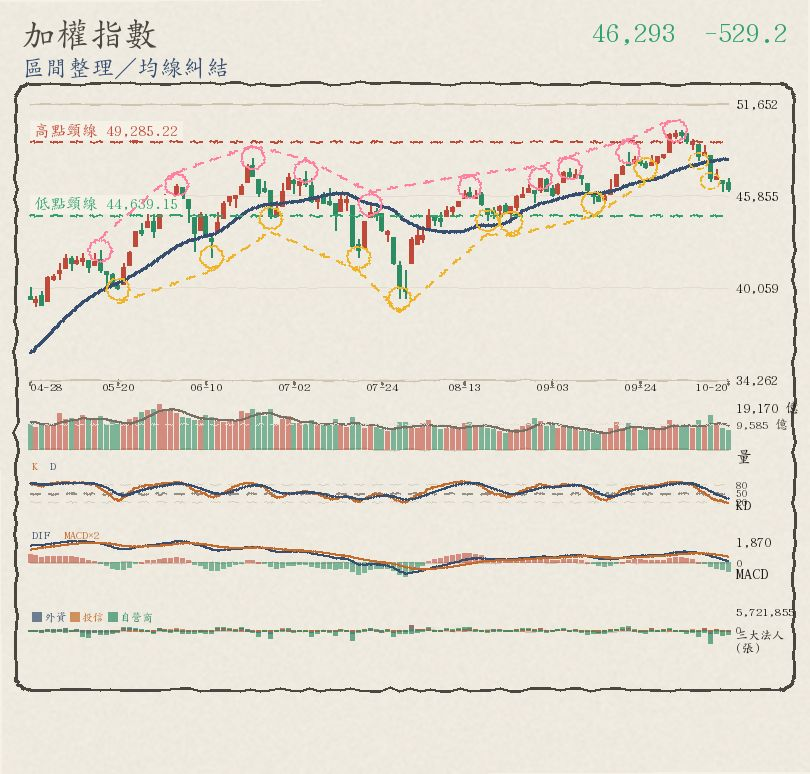
圖說：加權指數日 K（與個股圖相同標記）：黃圈＝轉折低點、粉圈＝轉折高點、虛線小圈＝還沒確認的轉折、藍線＝月線 MA20、水平虛線＝高點／低點頸線。最後一根是資料日當天。
本區塊為公開資料的技術面觀察，不構成投資建議，
不報牌、不預測、不下買賣決策。成交金額為集中市場總成交金額（含 ETF／權證），
與頁首摘要的「上市個股成交金額」口徑不同。標籤是統計，不是評分、也不是推薦。
上市 vs 上櫃（同期快篩）
加權 -1.13% vs 櫃買 -1.57%（同向） → 同向
（兩個市場分開寫，不合併成一個數字；櫃買為 TPEX 公開資料）
櫃買歷史：TPEX 逐日回補 130 根；來源：櫃買中心 www/zh-tw/indexInfo/sectinx（逐日，官方；OpenAPI tpex_index 只回當月）
（TPEX OpenAPI 只回當月，故逐日回補；歷史不足就不算該條均線並標「資料不足」，不用錯數字）
近 20 個交易日大盤狀態回溯（最新在上）（點開看逐日主狀態／量比／量價象限）
用同一支程式回算最近 20 個交易日（主狀態 S1~S8 與量比 20 皆為當日收盤當時的判定，
不是事後調整）；量比 20 未公布的日子寫「—」。
好條件最多的（前 10）
不好條件最多的（前 10）
好條件（8 項）：站上月線、月線向上、底底高、頭頭高、突破頸線、相對大盤強、外資買超、量價攻擊（收紅＋大量）。
不好條件（8 項）：跌破前低、今日下跌、相對大盤弱、在月線之下、量增下跌（出貨）、外資賣超、月線下彎、收盤跌破前一日低點。
兩邊都是同一組資料（日線結構＋當日收盤量價籌碼）算出來的「符合項目數」，只是方向相反；
條件數不是評分、也不是推薦，不構成投資建議。
上升趨勢：底底高 ＋ 頭頭高（11 上市 8／上櫃 3）
量價攻擊（收紅＋大量）（11 上市 9／上櫃 2）
跌破前低（線型轉弱）（27 上市 18／上櫃 9）
逐檔分析（70 檔）
區間或轉弱 成交金額 538.57 億・全榜第 1 名（上市第 1 名）
好條件 2/8：月線向上、相對大盤強
不好條件 3/8：今日下跌、在月線之下、外資賣超
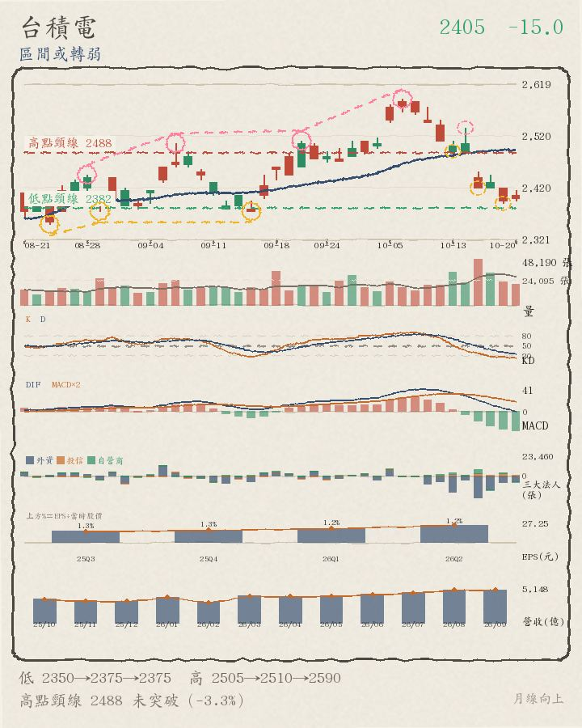
今天收黑、成交量也比平均少、跌破月線 2492，離高點頸線 2488 還差 3.3%，轉折還沒走出明顯方向。
- 月線位置：收盤 2405 在月線 2492 之下；5 日線 2435 也在月線之下（短均在下）；月線向上、5 日線走平或向下
- 量能：成交量是 20 日均量的 0.91 倍，比 20 日均量少一些
- 關鍵價位：高點頸線 2488 還沒突破，差 3.3%；最近轉折高點 2590（低於 7.1%）；最近轉折低點 2375（高於 1.3%）
- 轉折結構：低點 2350、2375、2375 與高點 2505、2510、2590 都沒有明顯遞增，屬於區間震盪或轉弱；還沒確認的轉折低點 10-15 2420、10-19 2390；還沒確認的轉折高點 10-14 2535（圖上虛線小圈）
高點墊高、底部不穩 成交金額 319.96 億・全榜第 2 名（上市第 2 名）
好條件 3/8：站上月線、月線向上、頭頭高
不好條件 5/8：今日下跌、相對大盤弱、量增下跌（出貨）、外資賣超、收盤跌破前一日低點
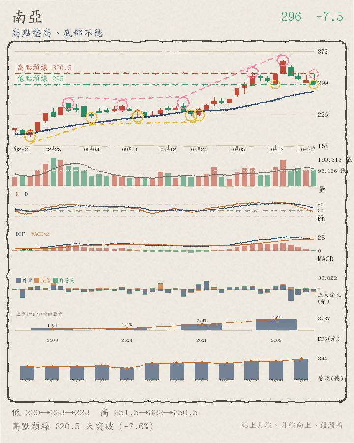
今天帶量收黑、站上月線 279.3，離高點頸線 320.5 還差 7.6%，高點還在墊高（但底部沒同步墊高）。
- 月線位置：收盤 296 在月線 279.3 之上；5 日線 314 也在月線之上（短均在上）；月線向上、5 日線向上
- 量能：成交量是 20 日均量的 1.16 倍，比 20 日均量大不少；收黑卻量增，量價背離
- 關鍵價位：高點頸線 320.5 還沒突破，差 7.6%；最近轉折高點 350.5（低於 15.5%）；最近轉折低點 223（高於 32.7%）
- 轉折結構：高點 251.5、322、350.5 墊高 39.4%（頭頭高），但低點 220.5、223、223 沒有同步墊高；還沒確認的轉折低點 10-13 295、10-20 295；還沒確認的轉折高點 10-20 319（圖上虛線小圈）
底部墊高、未過前高 成交金額 278.95 億・全榜第 4 名（上市第 3 名）
好條件 1/8：底底高
不好條件 6/8：跌破前低、今日下跌、相對大盤弱、在月線之下、外資賣超、月線下彎
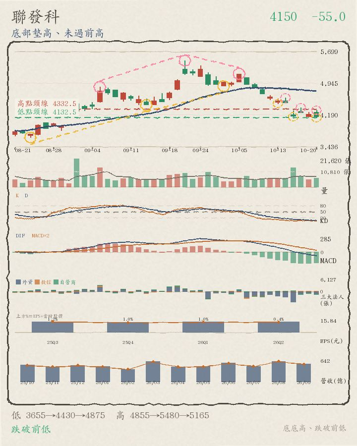
今天收黑、成交量也比平均少、跌破月線 4756.75，跌破前一個轉折低點（高點頸線 4332.5 還在收盤上方），底部還在墊高（但高點沒同步創高）。
- 月線位置：收盤 4150 在月線 4756.75 之下；5 日線 4249 也在月線之下（短均在下）；月線走平或向下、5 日線走平或向下
- 量能：成交量是 20 日均量的 0.89 倍，比 20 日均量少一些
- 關鍵價位：高點頸線 4332.5 還沒突破、還在收盤上方 4.2%；最近轉折高點 5165（低於 19.7%）；最近轉折低點 4875（低於 14.9%）
- 轉折結構：低點 3655、4430、4875 墊高 33.4%（底底高），但高點 4855、5480、5165 沒有同步創高；還沒確認的轉折低點 10-15 4145、10-20 4120；還沒確認的轉折高點 10-16 4360、10-20 4305（圖上虛線小圈）
區間或轉弱 成交金額 230.41 億・全榜第 5 名（上市第 4 名）
好條件 1/8：月線向上
不好條件 5/8：跌破前低、今日下跌、相對大盤弱、在月線之下、外資賣超
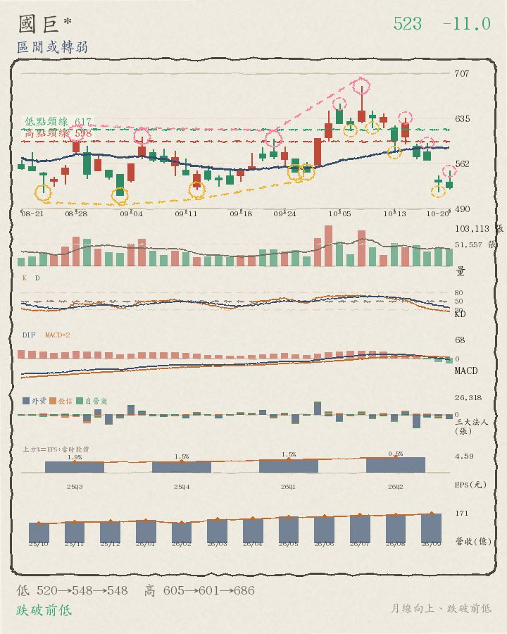
今天收黑、成交量也比平均少、跌破月線 587.35，跌破前一個轉折低點（高點頸線 598 還在收盤上方），轉折還沒走出明顯方向。
- 月線位置：收盤 523 在月線 587.35 之下；5 日線 564.8 也在月線之下（短均在下）；月線向上、5 日線走平或向下
- 量能：成交量是 20 日均量的 0.94 倍，比 20 日均量少一些
- 關鍵價位：高點頸線 598 還沒突破、還在收盤上方 12.5%；最近轉折高點 686（低於 23.8%）；最近轉折低點 548（低於 4.6%）
- 轉折結構：低點 520、548、548 與高點 605、601、686 都沒有明顯遞增，屬於區間震盪或轉弱；還沒確認的轉折低點 10-13 580、10-19 517；還沒確認的轉折高點 10-16 595、10-20 550（圖上虛線小圈）
區間或轉弱 成交金額 194.86 億・全榜第 6 名（上市第 5 名）
好條件 3/8：站上月線、月線向上、相對大盤強
不好條件 4/8：今日下跌、量增下跌（出貨）、外資賣超、收盤跌破前一日低點
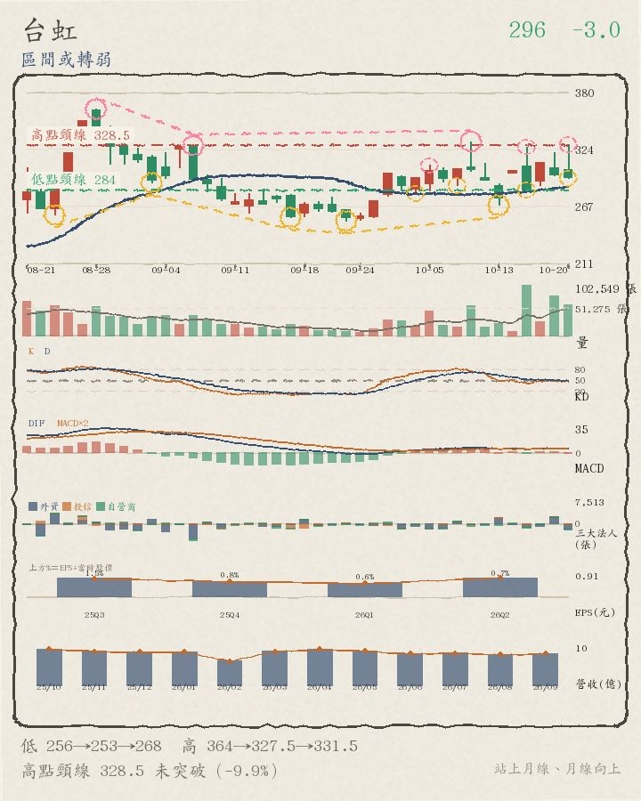
今天帶量收黑、站上月線 287.175，離高點頸線 328.5 還差 9.9%，轉折還沒走出明顯方向。
- 月線位置：收盤 296 在月線 287.175 之上；5 日線 298.6 也在月線之上（短均在上）；月線向上、5 日線向上
- 量能：成交量是 20 日均量的 2.17 倍，比 20 日均量大不少；收黑卻量增，量價背離
- 關鍵價位：高點頸線 328.5 還沒突破，差 9.9%；最近轉折高點 331.5（低於 10.7%）；最近轉折低點 268.5（高於 10.2%）
- 轉折結構：低點 256.5、253、268.5 與高點 364、327.5、331.5 都沒有明顯遞增，屬於區間震盪或轉弱；還沒確認的轉折低點 10-15 283.5、10-20 295.5；還沒確認的轉折高點 10-15 326.5、10-20 328.5（圖上虛線小圈）
區間或轉弱 成交金額 194.31 億・全榜第 7 名（上市第 6 名）
好條件 1/8：月線向上
不好條件 7/8：跌破前低、今日下跌、相對大盤弱、在月線之下、量增下跌（出貨）、外資賣超、收盤跌破前一日低點
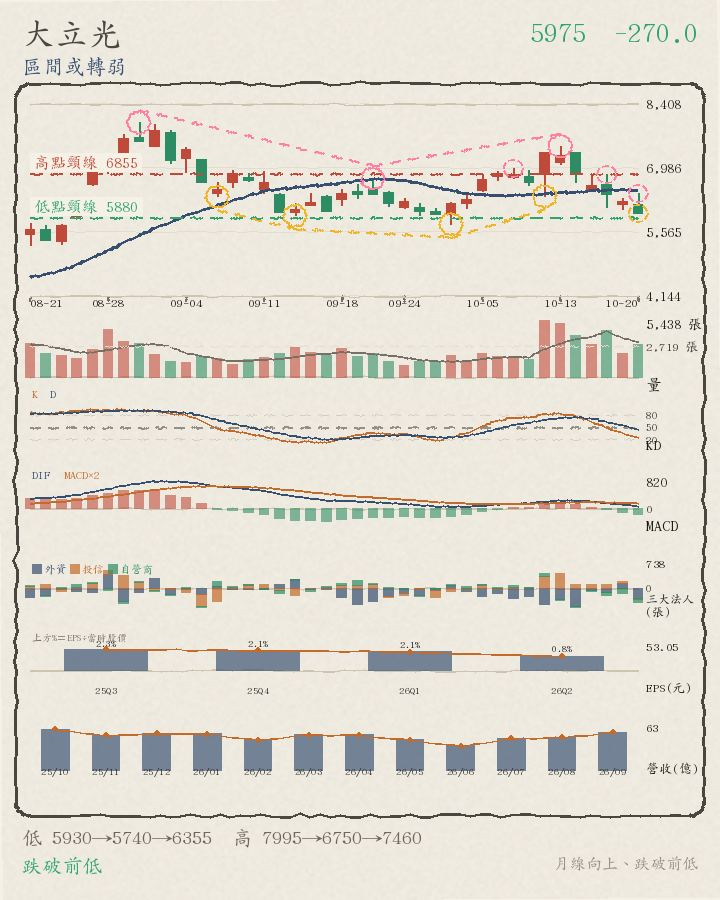
今天帶量收黑、跌破月線 6496.25，跌破前一個轉折低點（高點頸線 6855 還在收盤上方），轉折還沒走出明顯方向。
- 月線位置：收盤 5975 在月線 6496.25 之下；5 日線 6421 也在月線之下（短均在下）；月線向上、5 日線走平或向下
- 量能：成交量是 20 日均量的 1.25 倍，比 20 日均量大不少；收黑卻量增，量價背離
- 關鍵價位：高點頸線 6855 還沒突破、還在收盤上方 12.8%；最近轉折高點 7460（低於 19.9%）；最近轉折低點 6355（低於 6.0%）
- 轉折結構：低點 5930、5740、6355 與高點 7995、6750、7460 都沒有明顯遞增，屬於區間震盪或轉弱；還沒確認的轉折低點 10-20 5970；還沒確認的轉折高點 10-16 6845、10-20 6425（圖上虛線小圈）
底部墊高、未過前高 成交金額 166.64 億・全榜第 8 名（上市第 7 名）
好條件 4/8：站上月線、月線向上、底底高、相對大盤強
不好條件 1/8：外資賣超
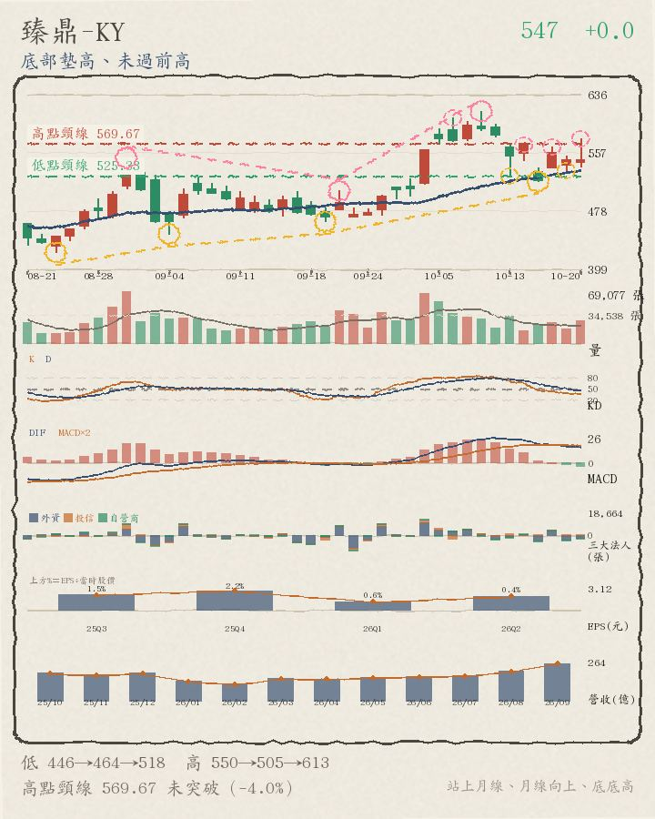
今天收黑、成交量也比平均少、站上月線 533.2，離高點頸線 569.67 還差 4.0%，底部還在墊高（但高點沒同步創高）。
- 月線位置：收盤 547 在月線 533.2 之上；5 日線 547.4 也在月線之上（短均在上）；月線向上、5 日線走平或向下
- 量能：成交量是 20 日均量的 0.92 倍，比 20 日均量少一些
- 關鍵價位：高點頸線 569.67 還沒突破，差 4.0%；最近轉折高點 613（低於 10.8%）；最近轉折低點 518（高於 5.6%）
- 轉折結構：低點 446.5、463.5、518 墊高 16.0%（底底高），但高點 550、505、613 沒有同步創高；還沒確認的轉折低點 10-13 525、10-19 533；還沒確認的轉折高點 10-16 565、10-20 576（圖上虛線小圈）
區間或轉弱 成交金額 164.93 億・全榜第 9 名（上市第 8 名）
好條件 0/8：無
不好條件 6/8：跌破前低、今日下跌、相對大盤弱、在月線之下、外資賣超、月線下彎
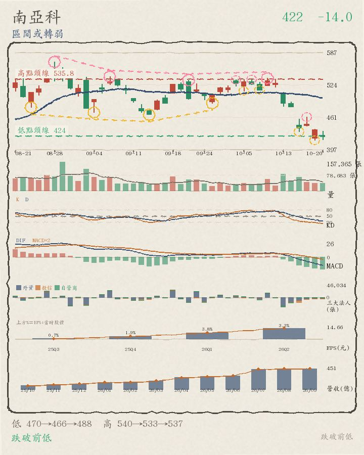
今天收黑、成交量也比平均少、跌破月線 498.375，跌破前一個轉折低點（高點頸線 535.8 還在收盤上方），轉折還沒走出明顯方向。
- 月線位置：收盤 422 在月線 498.375 之下；5 日線 445.1 也在月線之下（短均在下）；月線走平或向下、5 日線走平或向下
- 量能：成交量是 20 日均量的 0.83 倍，比 20 日均量少很多
- 關鍵價位：高點頸線 535.8 還沒突破、還在收盤上方 21.2%；最近轉折高點 537（低於 21.4%）；最近轉折低點 488（低於 13.5%）
- 轉折結構：低點 470、465.5、488 與高點 540、533、537 都沒有明顯遞增，屬於區間震盪或轉弱；還沒確認的轉折低點 10-15 432.5、10-19 415.5；還沒確認的轉折高點 10-06 535、10-16 461（圖上虛線小圈）
區間或轉弱 成交金額 157.72 億・全榜第 10 名（上市第 9 名）
好條件 4/8：站上月線、相對大盤強、外資買超、量價攻擊（收紅＋大量）
不好條件 1/8：月線下彎
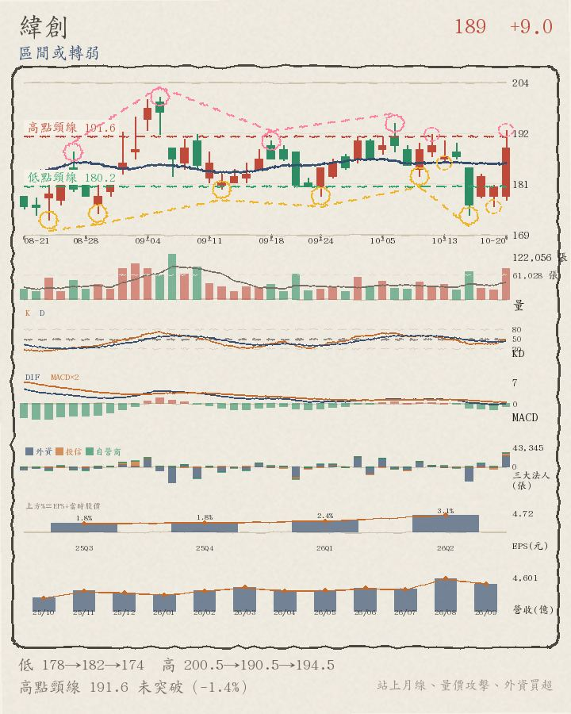
今天帶量收紅、站上月線 185.425，離高點頸線 191.6 還差 1.4%，轉折還沒走出明顯方向。
- 月線位置：收盤 189 在月線 185.425 之上；5 日線 182.9 也在月線之下（短均在下）；月線走平或向下、5 日線走平或向下
- 量能：成交量是 20 日均量的 2.30 倍，比 20 日均量大不少；收紅又量增，量價配合
- 關鍵價位：高點頸線 191.6 還沒突破，差 1.4%；最近轉折高點 194.5（低於 2.8%）；最近轉折低點 173.5（高於 8.9%）
- 轉折結構：低點 178、182.5、173.5 與高點 200.5、190.5、194.5 都沒有明顯遞增，屬於區間震盪或轉弱；還沒確認的轉折低點 10-13 185.5、10-19 175.5；還沒確認的轉折高點 10-12 192、10-20 193（圖上虛線小圈）
高點墊高、底部不穩 成交金額 154.95 億・全榜第 11 名（上市第 10 名）
好條件 1/8：頭頭高
不好條件 6/8：跌破前低、今日下跌、相對大盤弱、在月線之下、外資賣超、月線下彎
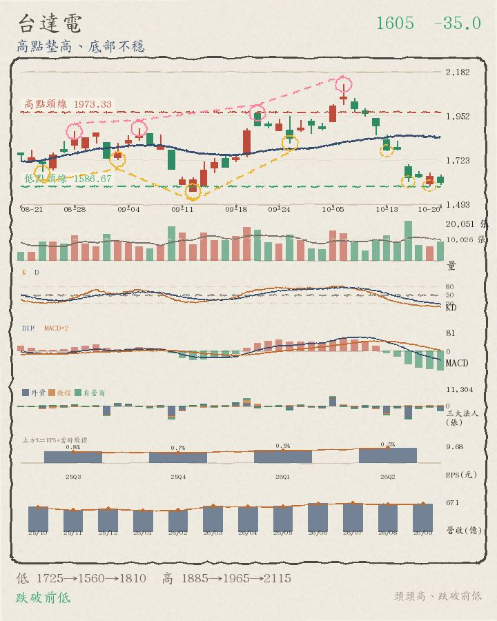
今天收黑、成交量也比平均少、跌破月線 1840.75，跌破前一個轉折低點（高點頸線 1973.33 還在收盤上方），高點還在墊高（但底部沒同步墊高）。
- 月線位置：收盤 1605 在月線 1840.75 之下；5 日線 1659 也在月線之下（短均在下）；月線走平或向下、5 日線走平或向下
- 量能：成交量是 20 日均量的 0.86 倍，比 20 日均量少一些
- 關鍵價位：高點頸線 1973.33 還沒突破、還在收盤上方 18.7%；最近轉折高點 2115（低於 24.1%）；最近轉折低點 1810（低於 11.3%）
- 轉折結構：高點 1885、1965、2115 墊高 12.2%（頭頭高），但低點 1725、1560、1810 沒有同步墊高；還沒確認的轉折低點 10-15 1610、10-19 1590（圖上虛線小圈）
高點墊高、底部不穩 成交金額 152.75 億・全榜第 12 名（上市第 11 名）
好條件 2/8：月線向上、頭頭高
不好條件 4/8：今日下跌、相對大盤弱、在月線之下、外資賣超
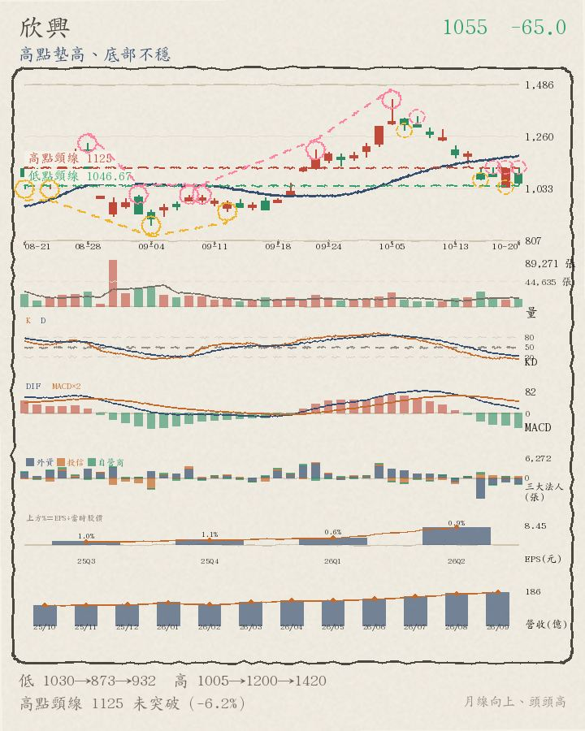
今天收黑、成交量也比平均少、跌破月線 1174.8，離高點頸線 1125 還差 6.2%，高點還在墊高（但底部沒同步墊高）。
- 月線位置：收盤 1055 在月線 1174.8 之下；5 日線 1105 也在月線之下（短均在下）；月線向上、5 日線走平或向下
- 量能：成交量是 20 日均量的 0.94 倍，比 20 日均量少一些
- 關鍵價位：高點頸線 1125 還沒突破，差 6.2%；最近轉折高點 1420（低於 25.7%）；最近轉折低點 932（高於 13.2%）
- 轉折結構：高點 1005、1200、1420 墊高 41.3%（頭頭高），但低點 1030、873、932 沒有同步墊高；還沒確認的轉折低點 10-15 1070、10-19 1040；還沒確認的轉折高點 10-19 1125、10-20 1125（圖上虛線小圈）
剛突破前高 成交金額 139.2 億・全榜第 14 名（上市第 12 名）
好條件 7/8：站上月線、月線向上、頭頭高、突破頸線、相對大盤強、外資買超、量價攻擊（收紅＋大量）
不好條件 0/8：無
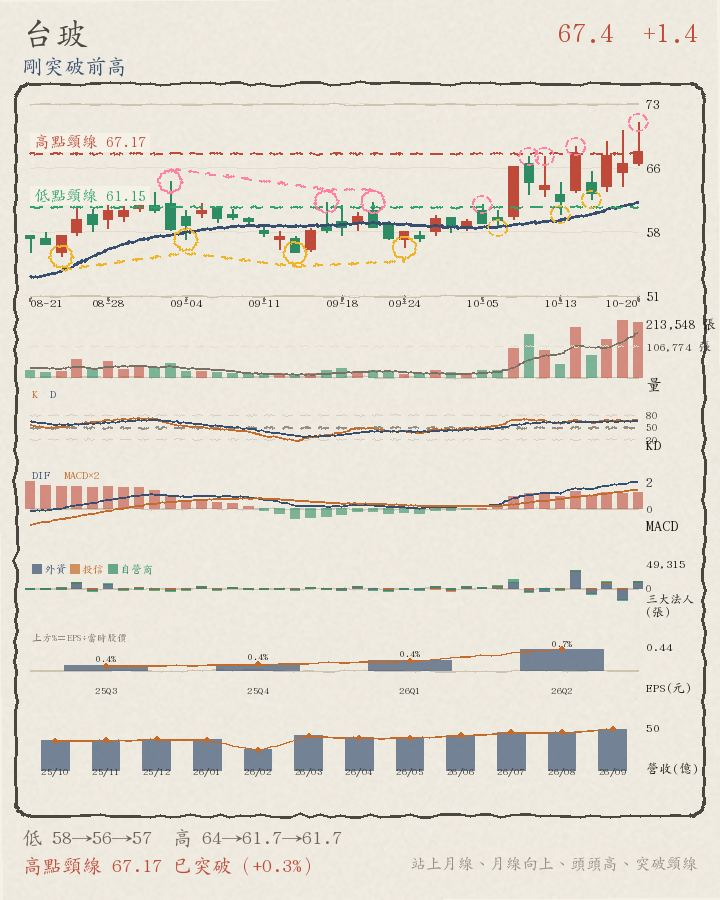
今天帶量收紅、站上月線 61.675，已站上高點頸線 67.17，高點還在墊高（但底部沒同步墊高）。
- 月線位置：收盤 67.4 在月線 61.675 之上；5 日線 66 也在月線之上（短均在上）；月線向上、5 日線向上
- 量能：成交量是 20 日均量的 3.23 倍，比 20 日均量大不少；收紅又量增，量價配合
- 關鍵價位：高點頸線 67.17 已站上；最近轉折高點 61.7（高於 9.2%）；最近轉折低點 56.6（高於 19.1%）
- 轉折結構：高點 64、61.7、61.7 墊高 14.4%（頭頭高），但低點 57.5、56、56.6 沒有同步墊高；還沒確認的轉折低點 10-13 60.3、10-15 62；還沒確認的轉折高點 10-14 67.9、10-20 70.6（圖上虛線小圈）
上升趨勢（底底高＋頭頭高） 成交金額 138.79 億・全榜第 15 名（上市第 13 名）
好條件 3/8：月線向上、底底高、頭頭高
不好條件 4/8：今日下跌、相對大盤弱、在月線之下、外資賣超
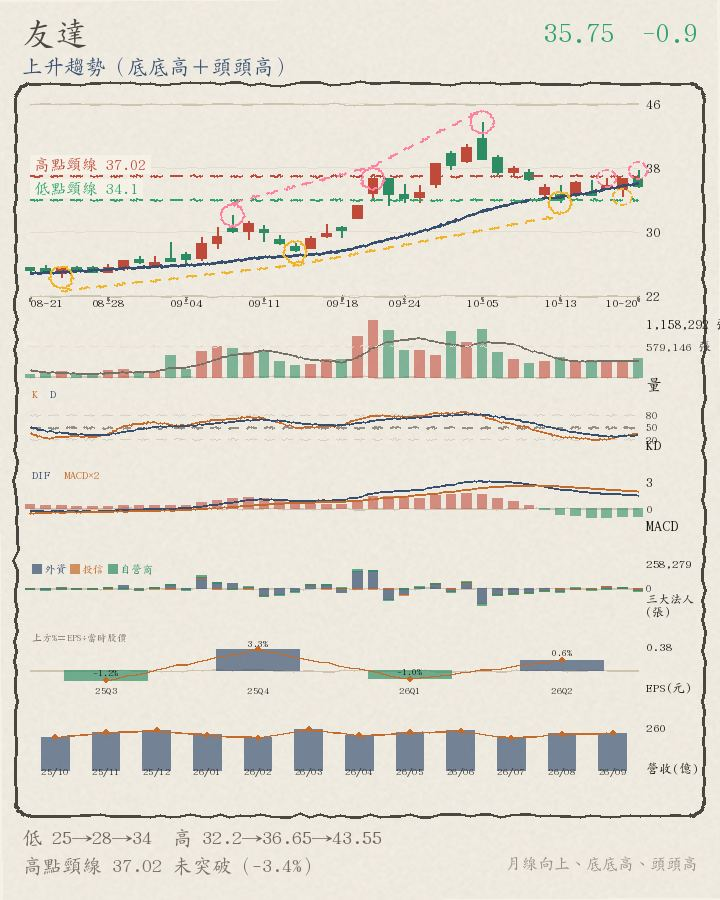
今天收黑、成交量也比平均少、跌破月線 36.093，離高點頸線 37.02 還差 3.4%，轉折結構仍是底底高＋頭頭高。
- 月線位置：收盤 35.75 在月線 36.093 之下；5 日線 35.9 也在月線之下（短均在下）；月線向上、5 日線走平或向下
- 量能：成交量是 20 日均量的 0.69 倍，比 20 日均量少很多
- 關鍵價位：高點頸線 37.02 還沒突破，差 3.4%；最近轉折高點 43.55（低於 17.9%）；最近轉折低點 33.75（高於 5.9%）
- 轉折結構：低點 24.6、27.75、33.75 一路墊高 37.2%、高點 32.2、36.65、43.55 也一路墊高 35.2%，是底底高＋頭頭高；還沒確認的轉折低點 10-19 34.45；還沒確認的轉折高點 10-16 36.75、10-20 37.65（圖上虛線小圈）
區間或轉弱 成交金額 135.78 億・全榜第 16 名（上市第 14 名）
好條件 2/8：站上月線、月線向上
不好條件 3/8：今日下跌、相對大盤弱、外資賣超
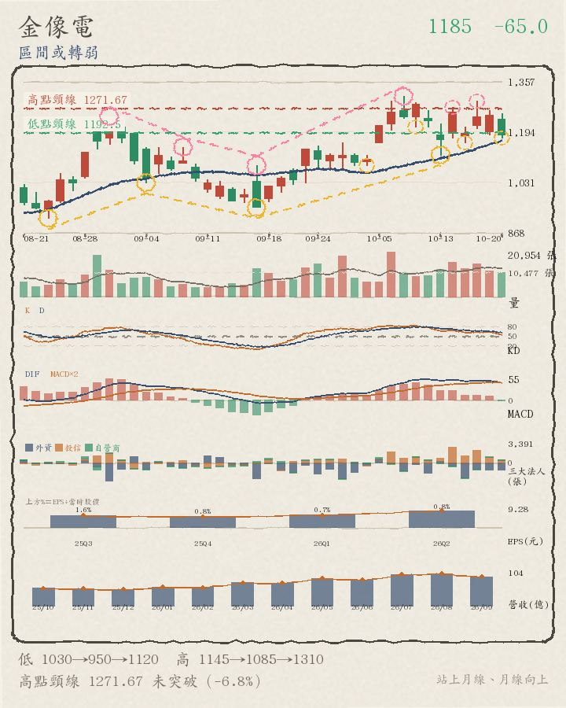
今天收黑、成交量也比平均少、站上月線 1166.5，離高點頸線 1271.67 還差 6.8%，轉折還沒走出明顯方向。
- 月線位置：收盤 1185 在月線 1166.5 之上；5 日線 1226 也在月線之上（短均在上）；月線向上、5 日線走平或向下
- 量能：成交量是 20 日均量的 0.94 倍，比 20 日均量少一些
- 關鍵價位：高點頸線 1271.67 還沒突破，差 6.8%；最近轉折高點 1310（低於 9.5%）；最近轉折低點 1120（高於 5.8%）
- 轉折結構：低點 1030、950、1120 與高點 1145、1085、1310 都沒有明顯遞增，屬於區間震盪或轉弱；還沒確認的轉折低點 10-15 1160、10-20 1175；還沒確認的轉折高點 10-14 1275、10-16 1295（圖上虛線小圈）
底部墊高、未過前高 成交金額 135.67 億・全榜第 17 名（上市第 15 名）
好條件 5/8：站上月線、月線向上、底底高、相對大盤強、量價攻擊（收紅＋大量）
不好條件 2/8：跌破前低、外資賣超
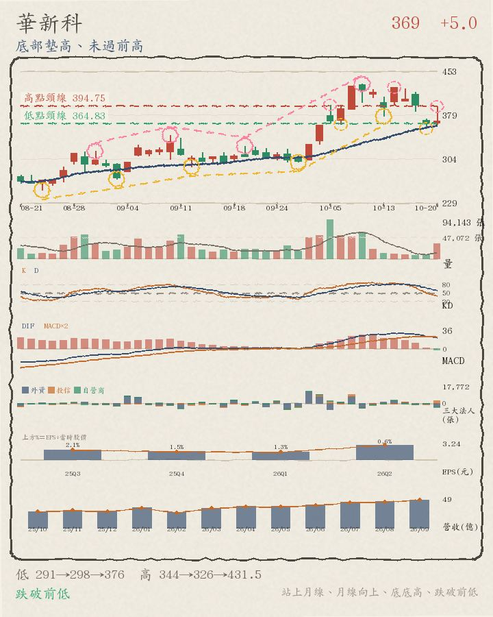
今天帶量收紅、站上月線 360.7，跌破前一個轉折低點（高點頸線 394.75 還在收盤上方），底部還在墊高（但高點沒同步創高）。
- 月線位置：收盤 369 在月線 360.7 之上；5 日線 391.9 也在月線之上（短均在上）；月線向上、5 日線走平或向下
- 量能：成交量是 20 日均量的 1.19 倍，比 20 日均量大不少；收紅又量增，量價配合
- 關鍵價位：高點頸線 394.75 還沒突破、還在收盤上方 6.5%；最近轉折高點 431.5（低於 14.5%）；最近轉折低點 376.5（低於 2.0%）
- 轉折結構：低點 291、298.5、376.5 墊高 29.4%（底底高），但高點 344、326、431.5 沒有同步創高；還沒確認的轉折低點 10-06 362.5、10-19 355.5；還沒確認的轉折高點 10-14 426、10-20 393.5（圖上虛線小圈）
底部墊高、未過前高 成交金額 127.38 億・全榜第 18 名（上市第 16 名）
好條件 1/8：底底高
不好條件 6/8：跌破前低、今日下跌、相對大盤弱、在月線之下、外資賣超、月線下彎
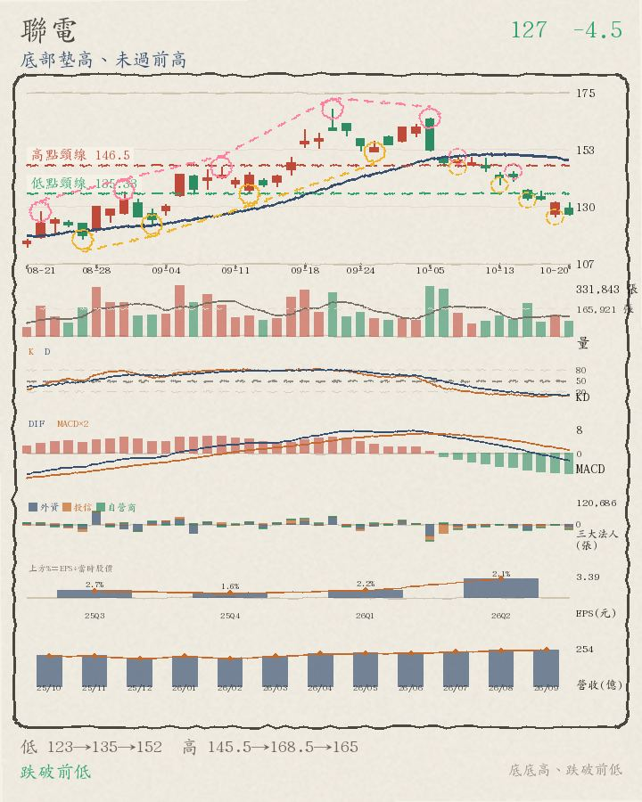
今天收黑、成交量也比平均少、跌破月線 148.4，跌破前一個轉折低點（高點頸線 146.5 還在收盤上方），底部還在墊高（但高點沒同步創高）。
- 月線位置：收盤 127 在月線 148.4 之下；5 日線 133.4 也在月線之下（短均在下）；月線走平或向下、5 日線走平或向下
- 量能：成交量是 20 日均量的 0.60 倍，比 20 日均量少很多
- 關鍵價位：高點頸線 146.5 還沒突破、還在收盤上方 13.3%；最近轉折高點 165（低於 23.0%）；最近轉折低點 151.5（低於 16.2%）
- 轉折結構：低點 123、135、151.5 墊高 23.2%（底底高），但高點 145.5、168.5、165 沒有同步創高；還沒確認的轉折低點 10-15 132.5、10-19 126；還沒確認的轉折高點 10-07 150、10-14 144（圖上虛線小圈）
區間或轉弱 成交金額 126.75 億・全榜第 19 名（上市第 17 名）
好條件 2/8：站上月線、月線向上
不好條件 4/8：今日下跌、相對大盤弱、量增下跌（出貨）、外資賣超
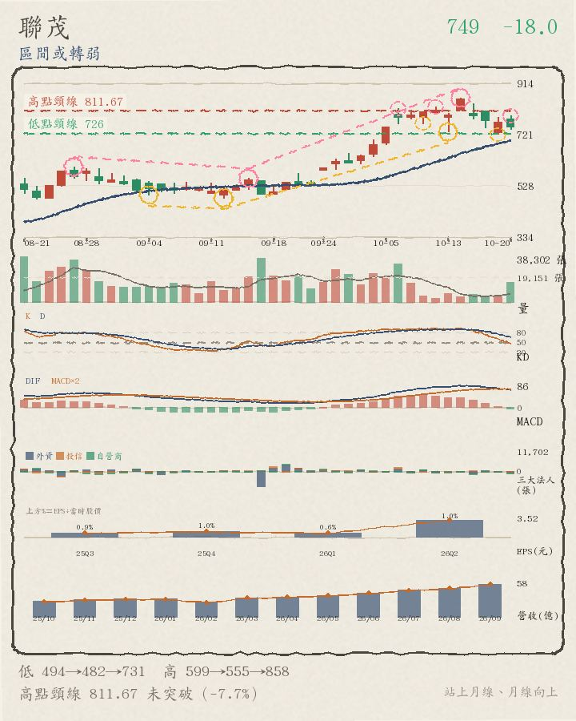
今天帶量收黑、站上月線 699.3，離高點頸線 811.67 還差 7.7%，轉折還沒走出明顯方向。
- 月線位置：收盤 749 在月線 699.3 之上；5 日線 789 也在月線之上（短均在上）；月線向上、5 日線走平或向下
- 量能：成交量是 20 日均量的 1.05 倍，比 20 日均量大一些；收黑卻量增，量價背離
- 關鍵價位：高點頸線 811.67 還沒突破，差 7.7%；最近轉折高點 858（低於 12.7%）；最近轉折低點 731（高於 2.5%）
- 轉折結構：低點 493.5、482、731 與高點 599、555、858 都沒有明顯遞增，屬於區間震盪或轉弱；還沒確認的轉折低點 10-08 763、10-19 721；還沒確認的轉折高點 10-12 825、10-20 792（圖上虛線小圈）
區間或轉弱 成交金額 123.18 億・全榜第 21 名（上市第 18 名）
好條件 1/8：月線向上
不好條件 5/8：今日下跌、相對大盤弱、在月線之下、外資賣超、收盤跌破前一日低點
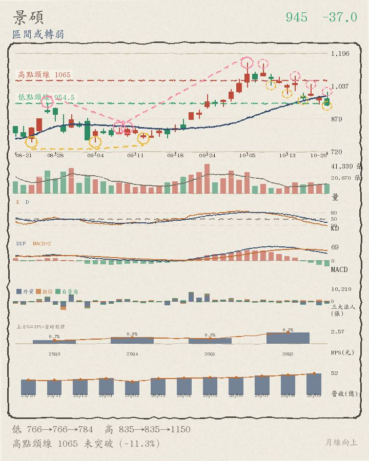
今天收黑、成交量也比平均少、跌破月線 990.85，離高點頸線 1065 還差 11.3%，轉折還沒走出明顯方向。
- 月線位置：收盤 945 在月線 990.85 之下；5 日線 991.2 也在月線之上（短均在上）；月線向上、5 日線走平或向下
- 量能：成交量是 20 日均量的 0.69 倍，比 20 日均量少很多
- 關鍵價位：高點頸線 1065 還沒突破，差 11.3%；最近轉折高點 1150（低於 17.8%）；最近轉折低點 784（高於 20.5%）
- 轉折結構：低點 766、766、784 與高點 835、835、1150 都沒有明顯遞增，屬於區間震盪或轉弱；還沒確認的轉折低點 10-15 968、10-20 941；還沒確認的轉折高點 10-16 1045、10-20 1010（圖上虛線小圈）
底部墊高、未過前高 成交金額 118.76 億・全榜第 22 名（上市第 19 名）
好條件 2/8：月線向上、底底高
不好條件 4/8：今日下跌、相對大盤弱、在月線之下、外資賣超
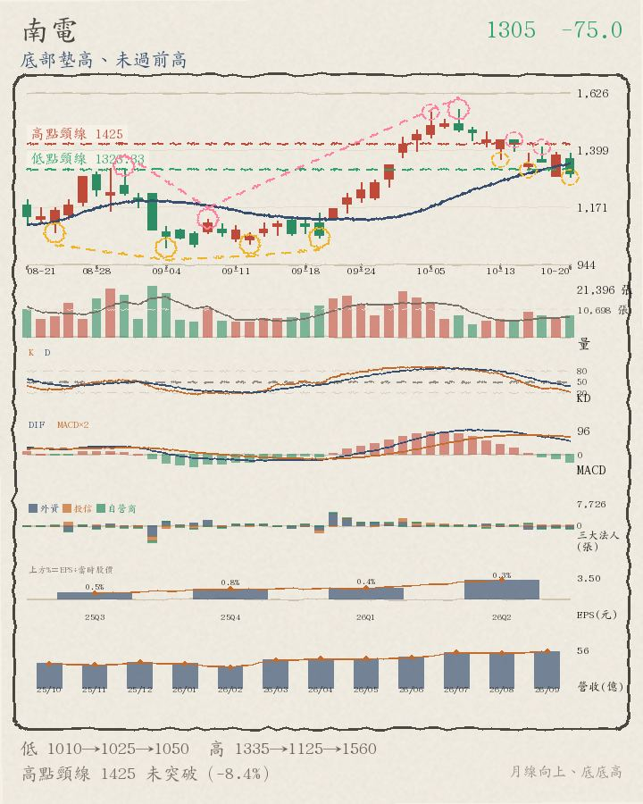
今天收黑、成交量也比平均少、跌破月線 1345.75，離高點頸線 1425 還差 8.4%，底部還在墊高（但高點沒同步創高）。
- 月線位置：收盤 1305 在月線 1345.75 之下；5 日線 1363 也在月線之上（短均在上）；月線向上、5 日線走平或向下
- 量能：成交量是 20 日均量的 0.81 倍，比 20 日均量少很多
- 關鍵價位：高點頸線 1425 還沒突破，差 8.4%；最近轉折高點 1560（低於 16.3%）；最近轉折低點 1050（高於 24.3%）
- 轉折結構：低點 1010、1025、1050 墊高 4.0%（底底高），但高點 1335、1125、1560 沒有同步創高；還沒確認的轉折低點 10-15 1320、10-20 1290；還沒確認的轉折高點 10-14 1440、10-16 1410（圖上虛線小圈）
上升趨勢（底底高＋頭頭高） 成交金額 110.75 億・全榜第 23 名（上市第 20 名）
好條件 5/8：月線向上、底底高、頭頭高、相對大盤強、外資買超
不好條件 2/8：今日下跌、在月線之下
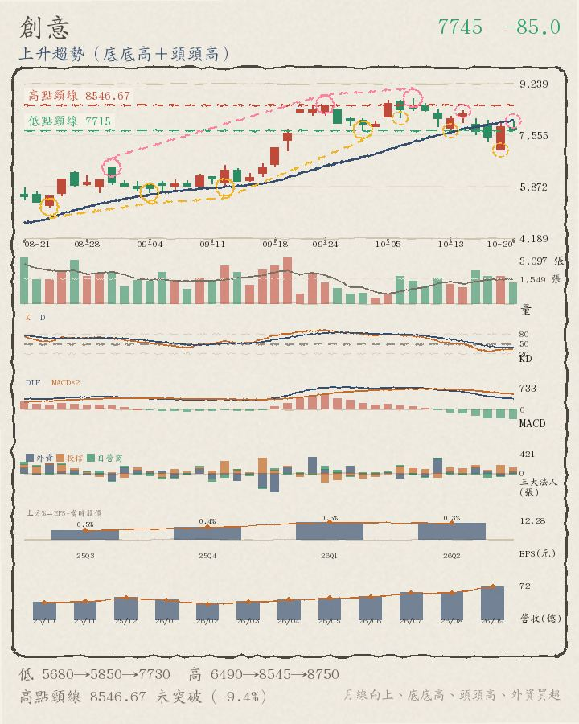
今天收黑、成交量也比平均少、跌破月線 8038.75，離高點頸線 8546.67 還差 9.4%，轉折結構仍是底底高＋頭頭高。
- 月線位置：收盤 7745 在月線 8038.75 之下；5 日線 7794 也在月線之下（短均在下）；月線向上、5 日線走平或向下
- 量能：成交量是 20 日均量的 0.95 倍，跟 20 日均量差不多
- 關鍵價位：高點頸線 8546.67 還沒突破，差 9.4%；最近轉折高點 8750（低於 11.5%）；最近轉折低點 7730（高於 0.2%）
- 轉折結構：低點 5680、5850、7730 一路墊高 36.1%、高點 6490、8545、8750 也一路墊高 34.8%，是底底高＋頭頭高；還沒確認的轉折低點 10-13 7700、10-19 7065；還沒確認的轉折高點 10-14 8345、10-20 8020（圖上虛線小圈）
高點墊高、底部不穩 成交金額 105.36 億・全榜第 24 名（上市第 21 名）
好條件 5/8：月線向上、頭頭高、相對大盤強、外資買超、量價攻擊（收紅＋大量）
不好條件 1/8：在月線之下
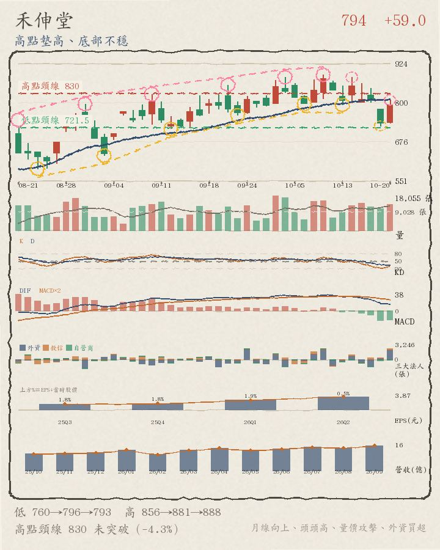
今天帶量收紅、跌破月線 809.75，離高點頸線 830 還差 4.3%，高點還在墊高（但底部沒同步墊高）。
- 月線位置：收盤 794 在月線 809.75 之下；5 日線 800 也在月線之下（短均在下）；月線向上、5 日線走平或向下
- 量能：成交量是 20 日均量的 1.21 倍，比 20 日均量大不少；收紅又量增，量價配合
- 關鍵價位：高點頸線 830 還沒突破，差 4.3%；最近轉折高點 888（低於 10.6%）；最近轉折低點 793（高於 0.1%）
- 轉折結構：高點 856、881、888 墊高 3.7%（頭頭高），但低點 760、796、793 沒有同步墊高；還沒確認的轉折低點 10-19 726；還沒確認的轉折高點 10-14 880、10-20 808（圖上虛線小圈）
區間或轉弱 成交金額 94.34 億・全榜第 25 名（上市第 22 名）
好條件 3/8：相對大盤強、外資買超、量價攻擊（收紅＋大量）
不好條件 3/8：跌破前低、在月線之下、月線下彎
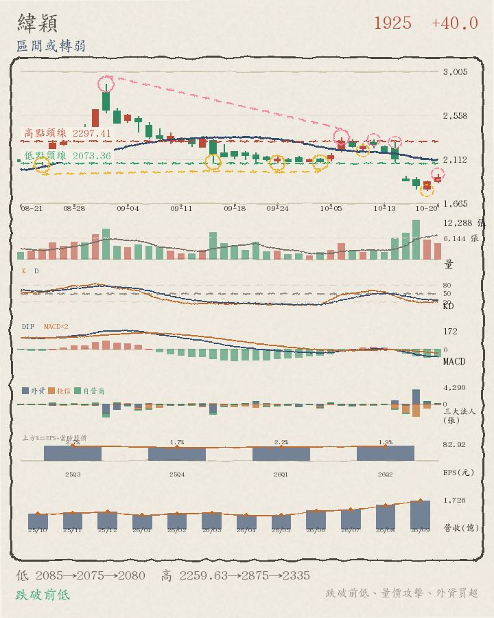
今天帶量收紅、跌破月線 2103.75，跌破前一個轉折低點（高點頸線 2297.41 還在收盤上方），轉折還沒走出明顯方向。
- 月線位置：收盤 1925 在月線 2103.75 之下；5 日線 1935 也在月線之下（短均在下）；月線走平或向下、5 日線走平或向下
- 量能：成交量是 20 日均量的 1.25 倍，比 20 日均量大不少；收紅又量增，量價配合
- 關鍵價位：高點頸線 2297.41 還沒突破、還在收盤上方 16.2%；最近轉折高點 2335（低於 17.6%）；最近轉折低點 2080（低於 7.5%）
- 轉折結構：低點 2085、2075、2080 與高點 2259.63、2875、2335 都沒有明顯遞增，屬於區間震盪或轉弱；還沒確認的轉折低點 10-08 2200、10-19 1795；還沒確認的轉折高點 10-14 2285、10-20 1960（圖上虛線小圈）
區間或轉弱 成交金額 92.21 億・全榜第 26 名（上市第 23 名）
好條件 2/8：月線向上、相對大盤強
不好條件 2/8：在月線之下、外資賣超
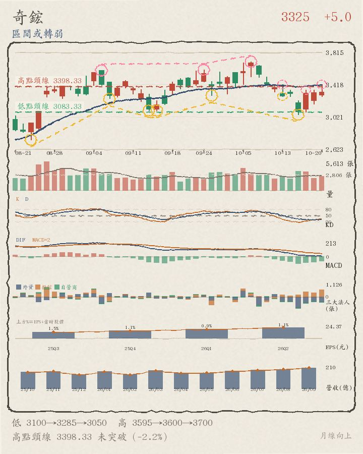
今天收紅、但成交量比平均少、跌破月線 3416.25，離高點頸線 3398.33 還差 2.2%，轉折還沒走出明顯方向。
- 月線位置：收盤 3325 在月線 3416.25 之下；5 日線 3272 也在月線之下（短均在下）；月線向上、5 日線走平或向下
- 量能：成交量是 20 日均量的 0.95 倍，跟 20 日均量差不多；收紅但量縮，量價背離
- 關鍵價位：高點頸線 3398.33 還沒突破，差 2.2%；最近轉折高點 3700（低於 10.1%）；最近轉折低點 3050（高於 9.0%）
- 轉折結構：低點 3100、3285、3050 與高點 3595、3600、3700 都沒有明顯遞增，屬於區間震盪或轉弱；還沒確認的轉折低點 10-13 3275；還沒確認的轉折高點 10-16 3355、10-20 3420（圖上虛線小圈）
區間或轉弱 成交金額 91.7 億・全榜第 27 名（上市第 24 名）
好條件 1/8：月線向上
不好條件 5/8：今日下跌、相對大盤弱、在月線之下、外資賣超、收盤跌破前一日低點
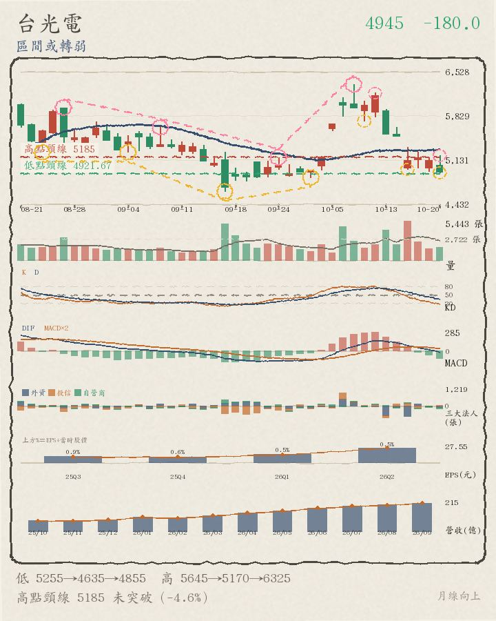
今天收黑、成交量也比平均少、跌破月線 5297.25，離高點頸線 5185 還差 4.6%，轉折還沒走出明顯方向。
- 月線位置：收盤 4945 在月線 5297.25 之下；5 日線 5175 也在月線之下（短均在下）；月線向上、5 日線走平或向下
- 量能：成交量是 20 日均量的 0.70 倍，比 20 日均量少很多
- 關鍵價位：高點頸線 5185 還沒突破，差 4.6%；最近轉折高點 6325（低於 21.8%）；最近轉折低點 4855（高於 1.9%）
- 轉折結構：低點 5255、4635、4855 與高點 5645、5170、6325 都沒有明顯遞增，屬於區間震盪或轉弱；還沒確認的轉折低點 10-15 4980、10-20 4930；還沒確認的轉折高點 10-12 6190、10-20 5200（圖上虛線小圈）
上升趨勢（底底高＋頭頭高） 成交金額 82.56 億・全榜第 29 名（上市第 25 名）
好條件 3/8：月線向上、底底高、頭頭高
不好條件 5/8：跌破前低、今日下跌、相對大盤弱、在月線之下、外資賣超
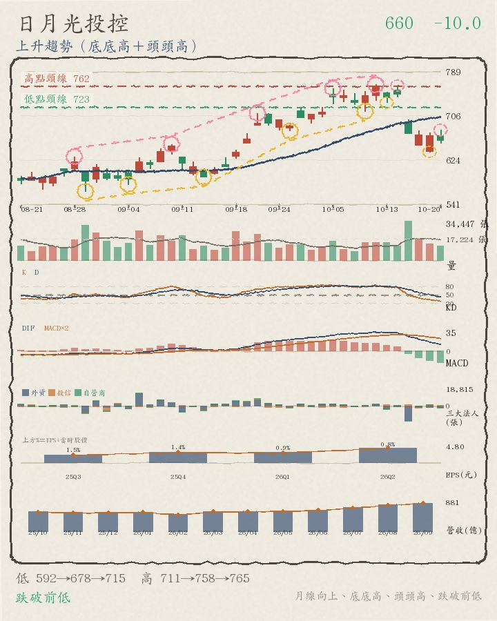
今天收黑、成交量也比平均少、跌破月線 704.2，跌破前一個轉折低點（高點頸線 762 還在收盤上方），轉折結構仍是底底高＋頭頭高。
- 月線位置：收盤 660 在月線 704.2 之下；5 日線 684.2 也在月線之下（短均在下）；月線向上、5 日線走平或向下
- 量能：成交量是 20 日均量的 0.81 倍，比 20 日均量少很多
- 關鍵價位：高點頸線 762 還沒突破、還在收盤上方 13.4%；最近轉折高點 765（低於 13.7%）；最近轉折低點 715（低於 7.7%）
- 轉折結構：低點 592、678、715 一路墊高 20.8%、高點 711、758、765 也一路墊高 7.6%，是底底高＋頭頭高；還沒確認的轉折低點 10-13 731、10-19 639；還沒確認的轉折高點 10-14 763、10-20 680（圖上虛線小圈）
區間或轉弱 成交金額 78.44 億・全榜第 31 名（上市第 26 名）
好條件 2/8：站上月線、月線向上
不好條件 3/8：今日下跌、相對大盤弱、外資賣超
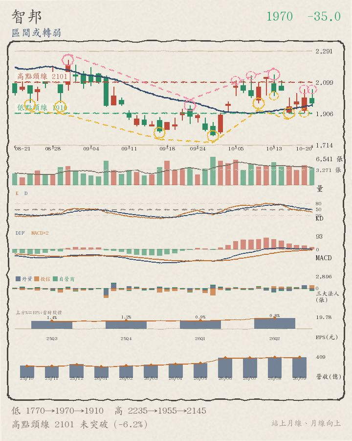
今天收黑、成交量也比平均少、站上月線 1959，離高點頸線 2101 還差 6.2%，轉折還沒走出明顯方向。
- 月線位置：收盤 1970 在月線 1959 之上；5 日線 1991 也在月線之上（短均在上）；月線向上、5 日線走平或向下
- 量能：成交量是 20 日均量的 0.89 倍，比 20 日均量少一些
- 關鍵價位：高點頸線 2101 還沒突破，差 6.2%；最近轉折高點 2145（低於 8.2%）；最近轉折低點 1910（高於 3.1%）
- 轉折結構：低點 1770、1970、1910 與高點 2235、1955、2145 都沒有明顯遞增，屬於區間震盪或轉弱；還沒確認的轉折低點 10-13 2015、10-19 1910；還沒確認的轉折高點 10-19 2055、10-20 2055（圖上虛線小圈）
底部墊高、未過前高 成交金額 77.25 億・全榜第 32 名（上市第 27 名）
好條件 4/8：站上月線、月線向上、底底高、外資買超
不好條件 3/8：今日下跌、相對大盤弱、量增下跌（出貨）
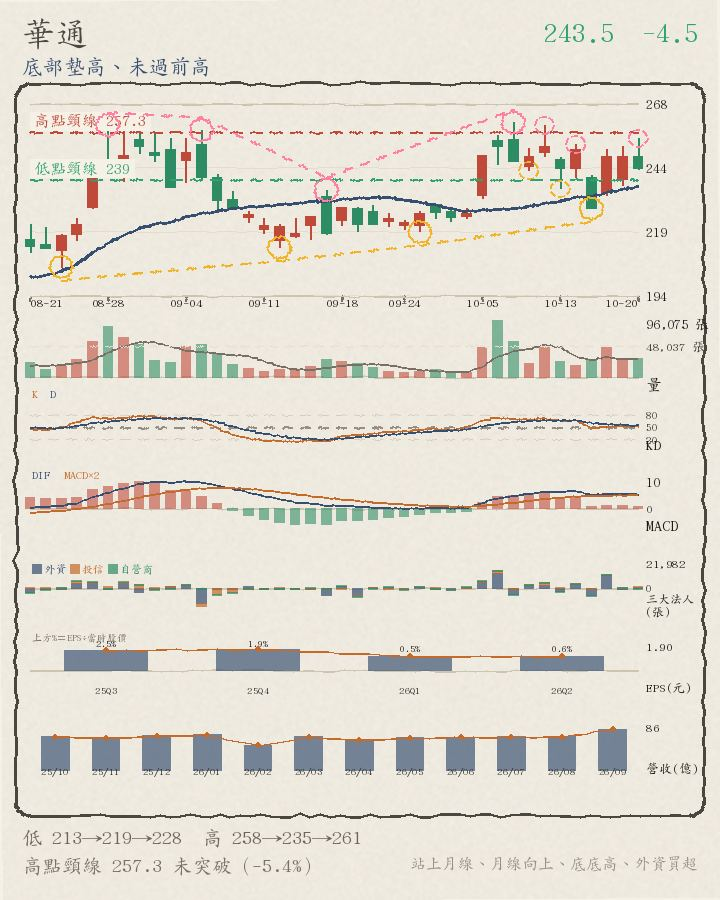
今天帶量收黑、站上月線 236.5，離高點頸線 257.3 還差 5.4%，底部還在墊高（但高點沒同步創高）。
- 月線位置：收盤 243.5 在月線 236.5 之上；5 日線 243.6 也在月線之上（短均在上）；月線向上、5 日線走平或向下
- 量能：成交量是 20 日均量的 1.07 倍，比 20 日均量大一些；收黑卻量增，量價背離
- 關鍵價位：高點頸線 257.3 還沒突破，差 5.4%；最近轉折高點 261（低於 6.7%）；最近轉折低點 228（高於 6.8%）
- 轉折結構：低點 213、219、228 墊高 7.0%（底底高），但高點 258、235、261 沒有同步創高；還沒確認的轉折低點 10-08 242.5、10-13 235.5；還沒確認的轉折高點 10-14 252.5、10-20 255（圖上虛線小圈）
剛突破前高 成交金額 74.03 億・全榜第 33 名（上市第 28 名）
好條件 4/8：站上月線、月線向上、頭頭高、相對大盤強
不好條件 2/8：今日下跌、外資賣超
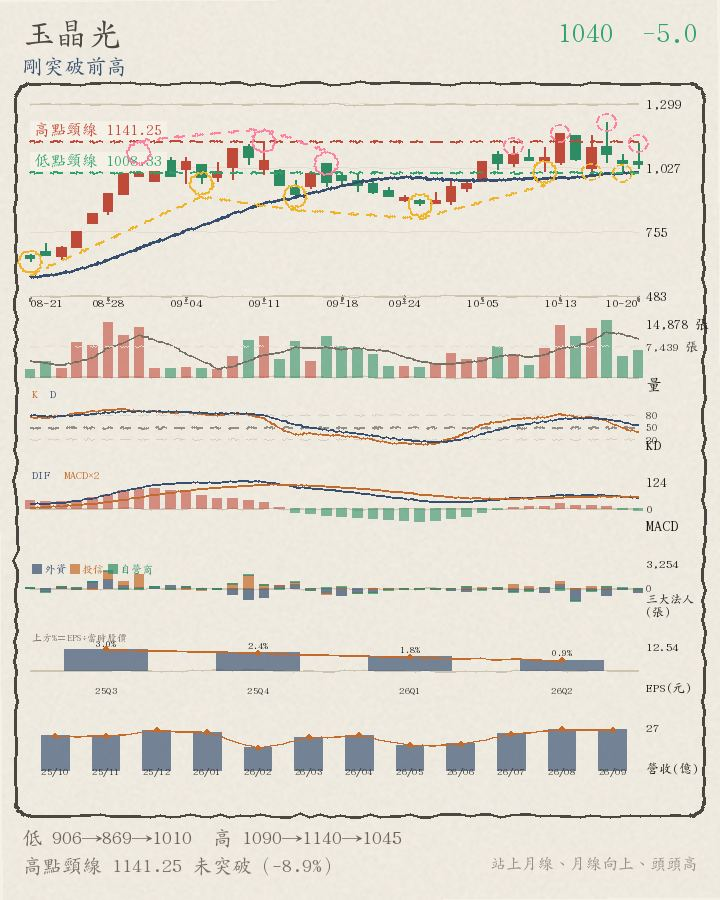
今天收黑、站上月線 1008.8，離高點頸線 1141.25 還差 8.9%，高點還在墊高（但底部沒同步墊高）。
- 月線位置：收盤 1040 在月線 1008.8 之上；5 日線 1070 也在月線之上（短均在上）；月線向上、5 日線走平或向下
- 量能：成交量是 20 日均量的 0.97 倍，跟 20 日均量差不多
- 關鍵價位：高點頸線 1141.25 還沒突破，差 8.9%；最近轉折高點 1045（低於 0.5%）；最近轉折低點 1010（高於 3.0%）
- 轉折結構：高點 1090、1140、1045 墊高 16.7%（頭頭高），但低點 906、869、1010 沒有同步墊高；還沒確認的轉折低點 10-15 1010、10-19 1005；還沒確認的轉折高點 10-16 1220、10-20 1130（圖上虛線小圈）
底部墊高、未過前高 成交金額 68.78 億・全榜第 35 名（上市第 29 名）
好條件 3/8：底底高、相對大盤強、外資買超
不好條件 3/8：跌破前低、在月線之下、月線下彎
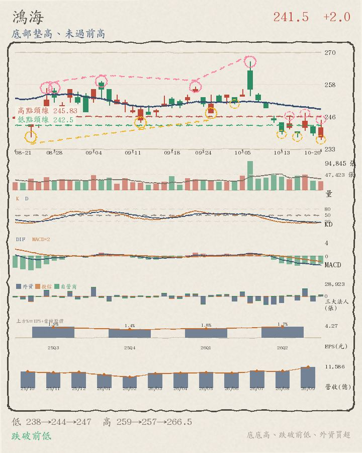
今天收紅、但成交量比平均少、跌破月線 248.5，跌破前一個轉折低點（高點頸線 245.83 還在收盤上方），底部還在墊高（但高點沒同步創高）。
- 月線位置：收盤 241.5 在月線 248.5 之下；5 日線 241.5 也在月線之下（短均在下）；月線走平或向下、5 日線走平或向下
- 量能：成交量是 20 日均量的 0.70 倍，比 20 日均量少很多；收紅但量縮，量價背離
- 關鍵價位：高點頸線 245.83 還沒突破、還在收盤上方 1.8%；最近轉折高點 266.5（低於 9.4%）；最近轉折低點 247（低於 2.2%）
- 轉折結構：低點 238、243.5、247 墊高 3.8%（底底高），但高點 259、257、266.5 沒有同步創高；還沒確認的轉折低點 10-15 238、10-20 237；還沒確認的轉折高點 10-16 247、10-20 244.5（圖上虛線小圈）
底部墊高、未過前高 成交金額 64.92 億・全榜第 36 名（上市第 30 名）
好條件 2/8：底底高、外資買超
不好條件 5/8：跌破前低、今日下跌、相對大盤弱、在月線之下、月線下彎
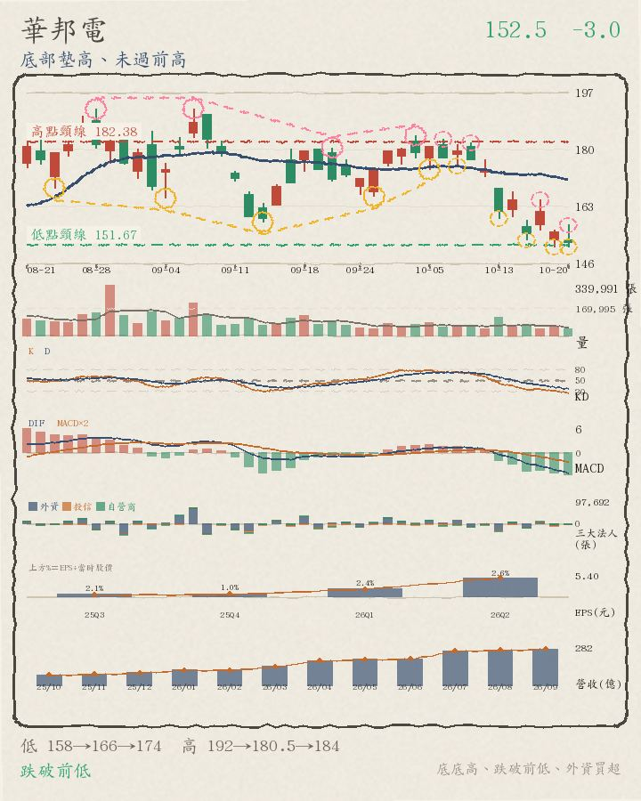
今天收黑、成交量也比平均少、跌破月線 171.05，跌破前一個轉折低點（高點頸線 182.38 還在收盤上方），底部還在墊高（但高點沒同步創高）。
- 月線位置：收盤 152.5 在月線 171.05 之下；5 日線 157.9 也在月線之下（短均在下）；月線走平或向下、5 日線走平或向下
- 量能：成交量是 20 日均量的 0.56 倍，比 20 日均量少很多
- 關鍵價位：高點頸線 182.38 還沒突破、還在收盤上方 16.4%；最近轉折高點 184（低於 17.1%）；最近轉折低點 174（低於 12.4%）
- 轉折結構：低點 158.5、166、174 墊高 9.8%（底底高），但高點 192、180.5、184 沒有同步創高；還沒確認的轉折低點 10-19 151、10-20 151；還沒確認的轉折高點 10-16 165、10-20 157.5（圖上虛線小圈）
區間或轉弱 成交金額 59.55 億・全榜第 37 名（上市第 31 名）
好條件 2/8：月線向上、相對大盤強
不好條件 3/8：跌破前低、在月線之下、外資賣超
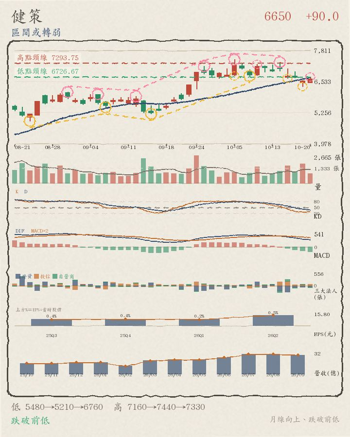
今天收紅、但成交量比平均少、跌破月線 6701.25，跌破前一個轉折低點（高點頸線 7293.75 還在收盤上方），轉折還沒走出明顯方向。
- 月線位置：收盤 6650 在月線 6701.25 之下；5 日線 6755 也在月線之上（短均在上）；月線向上、5 日線走平或向下
- 量能：成交量是 20 日均量的 0.76 倍，比 20 日均量少很多；收紅但量縮，量價背離
- 關鍵價位：高點頸線 7293.75 還沒突破、還在收盤上方 8.8%；最近轉折高點 7330（低於 9.3%）；最近轉折低點 6760（低於 1.6%）
- 轉折結構：低點 5480、5210、6760 與高點 7160、7440、7330 都沒有明顯遞增，屬於區間震盪或轉弱；還沒確認的轉折低點 10-15 6660、10-19 6330；還沒確認的轉折高點 10-08 7245、10-20 6720（圖上虛線小圈）
上升趨勢（底底高＋頭頭高） 成交金額 58.58 億・全榜第 38 名（上市第 32 名）
好條件 5/8：站上月線、月線向上、底底高、頭頭高、相對大盤強
不好條件 3/8：今日下跌、量增下跌（出貨）、外資賣超

今天帶量收黑、站上月線 242.525，轉折結構仍是底底高＋頭頭高。
- 月線位置：收盤 288 在月線 242.525 之上；5 日線 293.8 也在月線之上（短均在上）；月線向上、5 日線向上
- 量能：成交量是 20 日均量的 1.20 倍，比 20 日均量大不少；收黑卻量增，量價背離
- 關鍵價位：最近轉折高點 223（高於 29.1%）；最近轉折低點 211.5（高於 36.2%）
- 轉折結構：低點 172、179.5、211.5 一路墊高 23.0%、高點 181.5、210、223 也一路墊高 22.9%，是底底高＋頭頭高；還沒確認的轉折低點 10-15 282、10-19 276；還沒確認的轉折高點 10-16 314.5、10-20 297.5（圖上虛線小圈）
底部墊高、未過前高 成交金額 58.34 億・全榜第 39 名（上市第 33 名）
好條件 4/8：站上月線、月線向上、底底高、外資買超
不好條件 4/8：今日下跌、相對大盤弱、量增下跌（出貨）、收盤跌破前一日低點
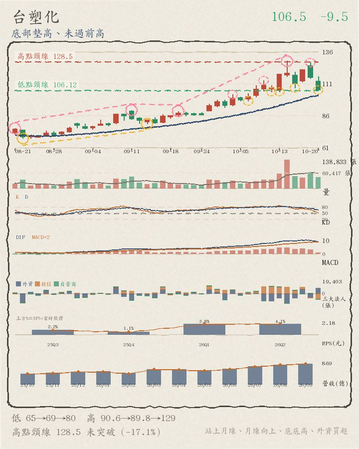
今天帶量收黑、站上月線 102.18，離高點頸線 128.5 還差 17.1%，底部還在墊高（但高點沒同步創高）。
- 月線位置：收盤 106.5 在月線 102.18 之上；5 日線 115.2 也在月線之上（短均在上）；月線向上、5 日線向上
- 量能：成交量是 20 日均量的 1.32 倍，比 20 日均量大不少；收黑卻量增，量價背離
- 關鍵價位：高點頸線 128.5 還沒突破，差 17.1%；最近轉折高點 129（低於 17.4%）；最近轉折低點 80（高於 33.1%）
- 轉折結構：低點 65.4、68.6、80 墊高 22.3%（底底高），但高點 90.6、89.8、129 沒有同步創高；還沒確認的轉折低點 10-15 108、10-20 106.5；還沒確認的轉折高點 10-08 114、10-19 128（圖上虛線小圈）
上升趨勢（底底高＋頭頭高） 成交金額 57.7 億・全榜第 40 名（上市第 34 名）
好條件 6/8：月線向上、底底高、頭頭高、相對大盤強、外資買超、量價攻擊（收紅＋大量）
不好條件 1/8：在月線之下
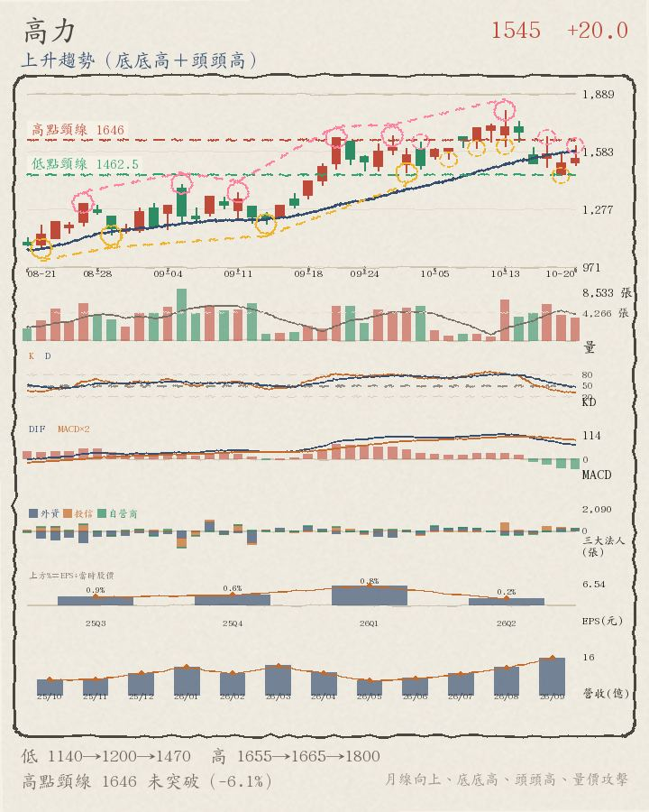
今天帶量收紅、跌破月線 1587.75，離高點頸線 1646 還差 6.1%，轉折結構仍是底底高＋頭頭高。
- 月線位置：收盤 1545 在月線 1587.75 之下；5 日線 1569 也在月線之下（短均在下）；月線向上、5 日線走平或向下
- 量能：成交量是 20 日均量的 1.05 倍，比 20 日均量大一些；收紅又量增，量價配合
- 關鍵價位：高點頸線 1646 還沒突破，差 6.1%；最近轉折高點 1800（低於 14.2%）；最近轉折低點 1470（高於 5.1%）
- 轉折結構：低點 1140、1200、1470 一路墊高 28.9%、高點 1655、1665、1800 也一路墊高 8.8%，是底底高＋頭頭高；還沒確認的轉折低點 10-13 1610、10-19 1455；還沒確認的轉折高點 10-16 1660、10-20 1615（圖上虛線小圈）
區間或轉弱 成交金額 57.43 億・全榜第 41 名（上市第 35 名）
好條件 2/8：相對大盤強、量價攻擊（收紅＋大量）
不好條件 3/8：在月線之下、外資賣超、月線下彎
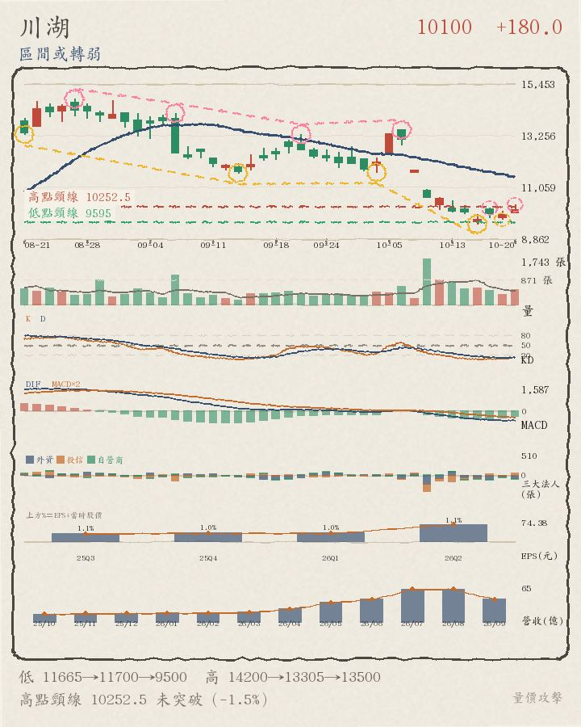
今天收紅、跌破月線 11502.8，離高點頸線 10252.5 還差 1.5%，轉折還沒走出明顯方向。
- 月線位置：收盤 10100 在月線 11502.8 之下；5 日線 9940 也在月線之下（短均在下）；月線走平或向下、5 日線走平或向下
- 量能：成交量是 20 日均量的 1.03 倍，跟 20 日均量差不多
- 關鍵價位：高點頸線 10252.5 還沒突破，差 1.5%；最近轉折高點 13500（低於 25.2%）；最近轉折低點 9500（高於 6.3%）
- 轉折結構：低點 11665、11700、9500 與高點 14200、13305、13500 都沒有明顯遞增，屬於區間震盪或轉弱；還沒確認的轉折低點 10-19 9690；還沒確認的轉折高點 10-16 10175、10-20 10330（圖上虛線小圈）
區間或轉弱 成交金額 52.67 億・全榜第 44 名（上市第 36 名）
好條件 1/8：月線向上
不好條件 5/8：今日下跌、相對大盤弱、在月線之下、量增下跌（出貨）、外資賣超
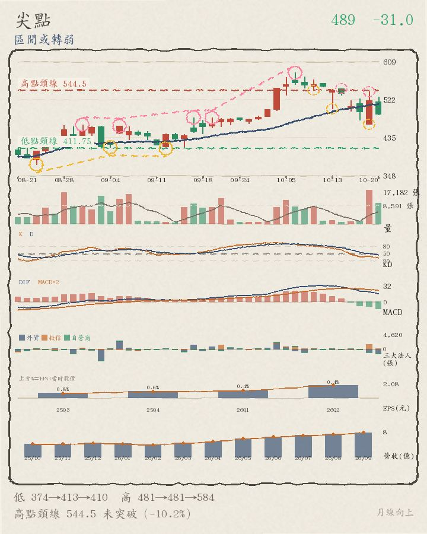
今天帶量收黑、跌破月線 512.157，離高點頸線 544.5 還差 10.2%，轉折還沒走出明顯方向。
- 月線位置：收盤 489 在月線 512.157 之下；5 日線 509.2 也在月線之下（短均在下）；月線向上、5 日線走平或向下
- 量能：成交量是 20 日均量的 1.81 倍，比 20 日均量大不少；收黑卻量增，量價背離
- 關鍵價位：高點頸線 544.5 還沒突破，差 10.2%；最近轉折高點 584（低於 16.3%）；最近轉折低點 410.5（高於 19.1%）
- 轉折結構：低點 373.5、413、410.5 與高點 481、481、584 都沒有明顯遞增，屬於區間震盪或轉弱；還沒確認的轉折低點 10-13 501、10-19 466；還沒確認的轉折高點 10-14 548、10-19 541（圖上虛線小圈）
區間或轉弱 成交金額 48.17 億・全榜第 45 名（上市第 37 名）
好條件 0/8：無
不好條件 6/8：跌破前低、今日下跌、相對大盤弱、在月線之下、外資賣超、月線下彎
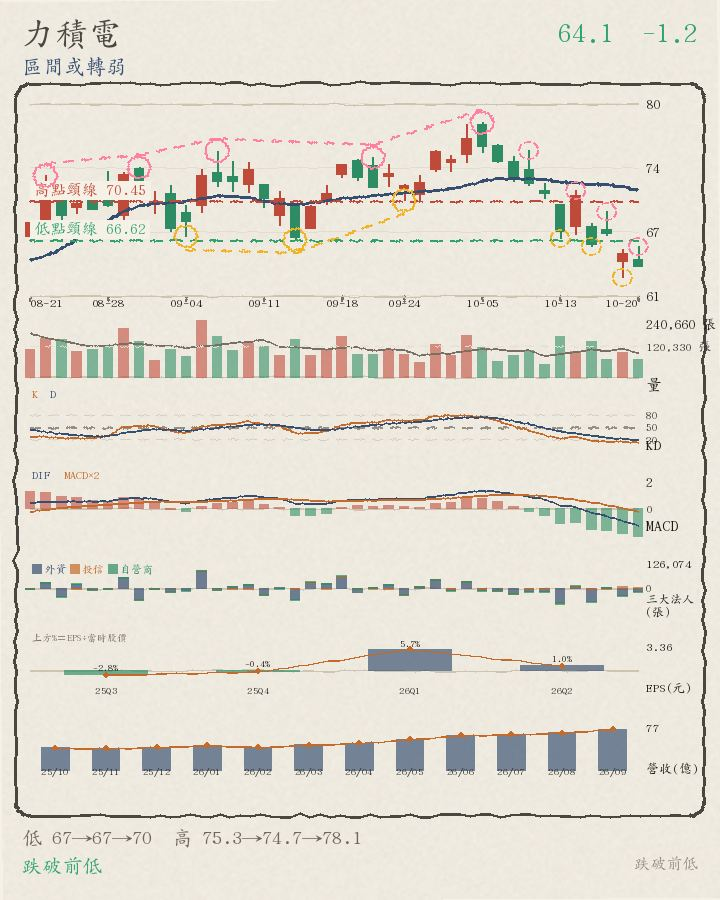
今天收黑、成交量也比平均少、跌破月線 71.495，跌破前一個轉折低點（高點頸線 70.45 還在收盤上方），轉折還沒走出明顯方向。
- 月線位置：收盤 64.1 在月線 71.495 之下；5 日線 66.78 也在月線之下（短均在下）；月線走平或向下、5 日線走平或向下
- 量能：成交量是 20 日均量的 0.67 倍，比 20 日均量少很多
- 關鍵價位：高點頸線 70.45 還沒突破、還在收盤上方 9.0%；最近轉折高點 78.1（低於 17.9%）；最近轉折低點 70.5（低於 9.1%）
- 轉折結構：低點 67、66.7、70.5 與高點 75.3、74.7、78.1 都沒有明顯遞增，屬於區間震盪或轉弱；還沒確認的轉折低點 10-15 66、10-19 63；還沒確認的轉折高點 10-16 69.4、10-20 66（圖上虛線小圈）
高點墊高、底部不穩 成交金額 45.44 億・全榜第 47 名（上市第 38 名）
好條件 4/8：站上月線、月線向上、頭頭高、突破頸線
不好條件 4/8：今日下跌、相對大盤弱、外資賣超、收盤跌破前一日低點
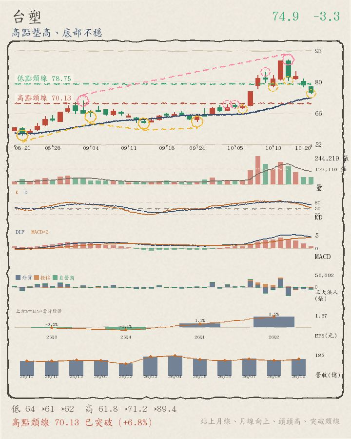
今天收黑、成交量也比平均少、站上月線 72.55，已站上高點頸線 70.13，高點還在墊高（但底部沒同步墊高）。
- 月線位置：收盤 74.9 在月線 72.55 之上；5 日線 81.16 也在月線之上（短均在上）；月線向上、5 日線向上
- 量能：成交量是 20 日均量的 0.81 倍，比 20 日均量少很多
- 關鍵價位：高點頸線 70.13 已站上；最近轉折高點 89.4（低於 16.2%）；最近轉折低點 62（高於 20.8%）
- 轉折結構：高點 61.8、71.2、89.4 墊高 44.7%（頭頭高），但低點 64.1、61.2、62 沒有同步墊高；還沒確認的轉折低點 10-15 80.2、10-20 74.4；還沒確認的轉折高點 10-05 69.6、10-12 84（圖上虛線小圈）
區間或轉弱 成交金額 43.52 億・全榜第 49 名（上市第 39 名）
好條件 1/8：月線向上
不好條件 4/8：今日下跌、相對大盤弱、在月線之下、外資賣超
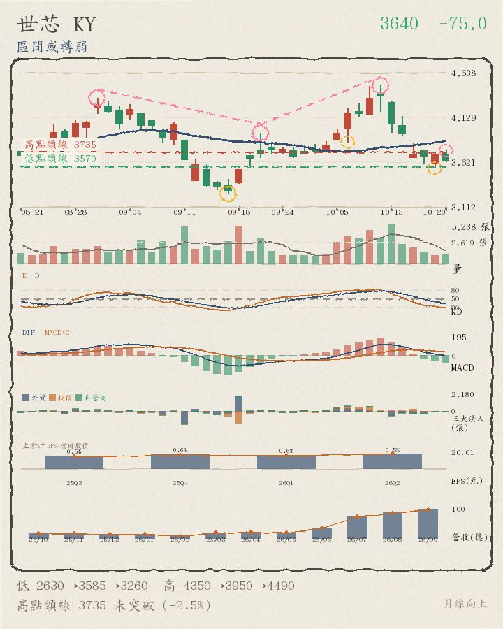
今天收黑、成交量也比平均少、跌破月線 3862.5，離高點頸線 3735 還差 2.5%，轉折還沒走出明顯方向。
- 月線位置：收盤 3640 在月線 3862.5 之下；5 日線 3737 也在月線之下（短均在下）；月線向上、5 日線走平或向下
- 量能：成交量是 20 日均量的 0.48 倍，比 20 日均量少很多
- 關鍵價位：高點頸線 3735 還沒突破，差 2.5%；最近轉折高點 4490（低於 18.9%）；最近轉折低點 3260（高於 11.7%）
- 轉折結構：低點 2630、3585、3260 與高點 4350、3950、4490 都沒有明顯遞增，屬於區間震盪或轉弱；還沒確認的轉折低點 10-06 3850、10-19 3555；還沒確認的轉折高點 10-20 3750（圖上虛線小圈）
高點墊高、底部不穩 成交金額 41.52 億・全榜第 52 名（上市第 40 名）
好條件 3/8：月線向上、頭頭高、相對大盤強
不好條件 4/8：跌破前低、今日下跌、在月線之下、外資賣超
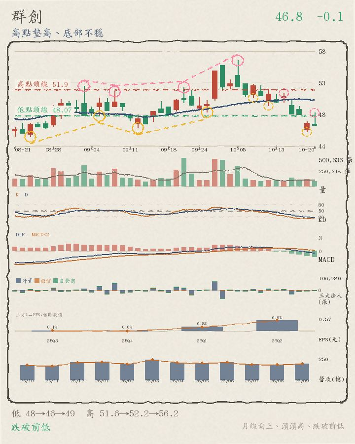
今天收黑、成交量也比平均少、跌破月線 50.362，跌破前一個轉折低點（高點頸線 51.9 還在收盤上方），高點還在墊高（但底部沒同步墊高）。
- 月線位置：收盤 46.8 在月線 50.362 之下；5 日線 48.24 也在月線之下（短均在下）；月線向上、5 日線走平或向下
- 量能：成交量是 20 日均量的 0.44 倍，比 20 日均量少很多
- 關鍵價位：高點頸線 51.9 還沒突破、還在收盤上方 9.8%；最近轉折高點 56.2（低於 16.7%）；最近轉折低點 48.55（低於 3.6%）
- 轉折結構：高點 51.6、52.2、56.2 墊高 8.9%（頭頭高），但低點 48、46.25、48.55 沒有同步墊高；還沒確認的轉折低點 10-12 49.5、10-19 45.65；還沒確認的轉折高點 10-14 51.4、10-20 48.5（圖上虛線小圈）
區間或轉弱 成交金額 39.68 億・全榜第 53 名（上市第 41 名）
好條件 1/8：月線向上
不好條件 5/8：跌破前低、今日下跌、相對大盤弱、在月線之下、外資賣超
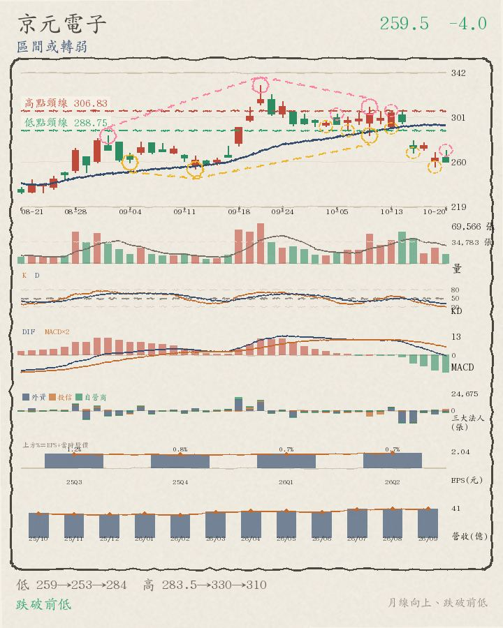
今天收黑、成交量也比平均少、跌破月線 293.65，跌破前一個轉折低點（高點頸線 306.83 還在收盤上方），轉折還沒走出明顯方向。
- 月線位置：收盤 259.5 在月線 293.65 之下；5 日線 273.3 也在月線之下（短均在下）；月線向上、5 日線走平或向下
- 量能：成交量是 20 日均量的 0.45 倍，比 20 日均量少很多
- 關鍵價位：高點頸線 306.83 還沒突破、還在收盤上方 15.4%；最近轉折高點 310（低於 16.3%）；最近轉折低點 284（低於 8.6%）
- 轉折結構：低點 259、253、284 與高點 283.5、330、310 都沒有明顯遞增，屬於區間震盪或轉弱；還沒確認的轉折低點 10-15 268、10-19 255；還沒確認的轉折高點 10-13 307、10-20 270.5（圖上虛線小圈）
高點墊高、底部不穩 成交金額 36.43 億・全榜第 55 名（上市第 42 名）
好條件 2/8：頭頭高、相對大盤強
不好條件 5/8：跌破前低、今日下跌、在月線之下、外資賣超、月線下彎
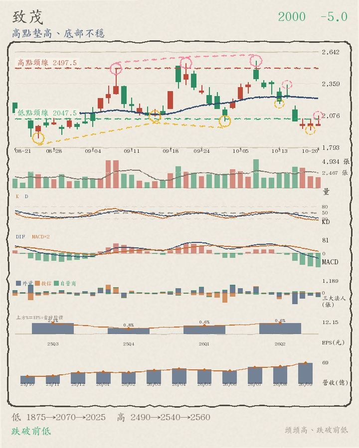
今天收黑、成交量也比平均少、跌破月線 2228.25，跌破前一個轉折低點（高點頸線 2497.5 還在收盤上方），高點還在墊高（但底部沒同步墊高）。
- 月線位置：收盤 2000 在月線 2228.25 之下；5 日線 2056 也在月線之下（短均在下）；月線走平或向下、5 日線走平或向下
- 量能：成交量是 20 日均量的 0.69 倍，比 20 日均量少很多
- 關鍵價位：高點頸線 2497.5 還沒突破、還在收盤上方 19.9%；最近轉折高點 2560（低於 21.9%）；最近轉折低點 2025（低於 1.2%）
- 轉折結構：高點 2490、2540、2560 墊高 2.8%（頭頭高），但低點 1875、2070、2025 沒有同步墊高；還沒確認的轉折低點 10-13 2180、10-19 1945；還沒確認的轉折高點 10-14 2350、10-20 2075（圖上虛線小圈）
上升趨勢（底底高＋頭頭高） 成交金額 36.27 億・全榜第 56 名（上市第 43 名）
好條件 5/8：站上月線、月線向上、底底高、頭頭高、相對大盤強
不好條件 1/8：外資賣超
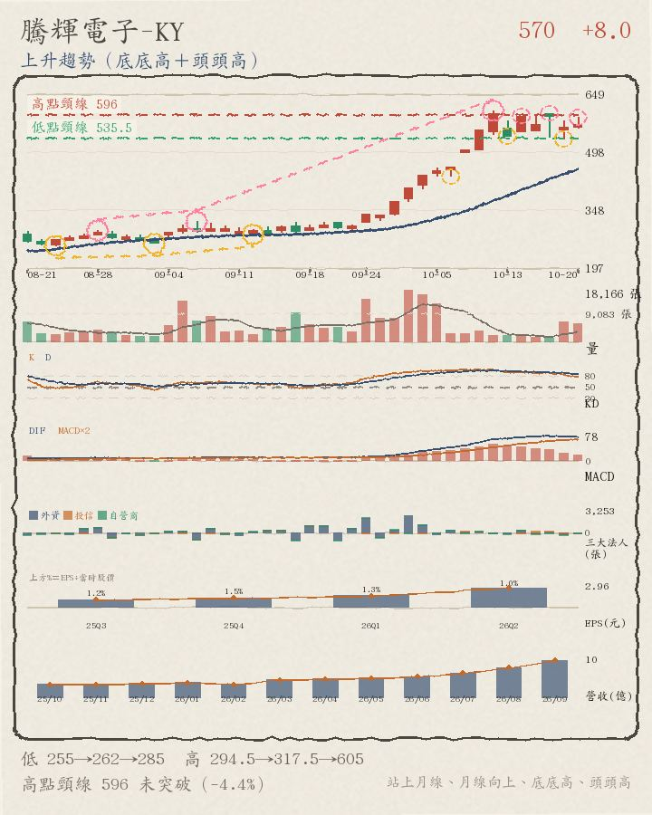
今天收紅、站上月線 455，離高點頸線 596 還差 4.4%，轉折結構仍是底底高＋頭頭高。
- 月線位置：收盤 570 在月線 455 之上；5 日線 577 也在月線之上（短均在上）；月線向上、5 日線向上
- 量能：成交量是 20 日均量的 0.96 倍，跟 20 日均量差不多
- 關鍵價位：高點頸線 596 還沒突破，差 4.4%；最近轉折高點 605（低於 5.8%）；最近轉折低點 285（高於 100.0%）
- 轉折結構：低點 255、261.5、285 一路墊高 11.8%、高點 294.5、317.5、605 也一路墊高 105.4%，是底底高＋頭頭高；還沒確認的轉折低點 10-13 539、10-19 532；還沒確認的轉折高點 10-16 599、10-20 588（圖上虛線小圈）
底部墊高、突破前高 成交金額 33.83 億・全榜第 57 名（上市第 44 名）
好條件 7/8：站上月線、月線向上、底底高、頭頭高、相對大盤強、外資買超、量價攻擊（收紅＋大量）
不好條件 0/8：無
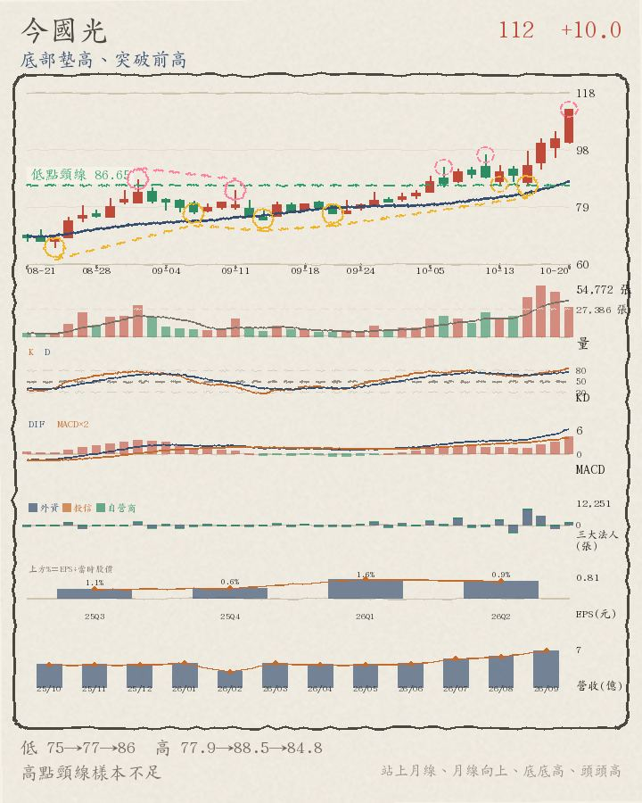
今天帶量收紅、站上月線 87.9，轉折結構仍是底底高＋頭頭高。
- 月線位置：收盤 112 在月線 87.9 之上；5 日線 99.46 也在月線之上（短均在上）；月線向上、5 日線向上
- 量能：成交量是 20 日均量的 1.76 倍，比 20 日均量大不少；收紅又量增，量價配合
- 關鍵價位：最近轉折高點 84.8（高於 32.1%）；最近轉折低點 86.4（高於 29.6%）
- 轉折結構：低點 75.3、76.9、86.4 一路墊高 14.7%、高點 77.9、88.5、84.8 也一路墊高 32.1%，是底底高＋頭頭高；還沒確認的轉折低點 10-13 86.9；還沒確認的轉折高點 10-12 96.8、10-20 112（圖上虛線小圈）
區間或轉弱 成交金額 33.69 億・全榜第 58 名（上市第 45 名）
好條件 1/8：月線向上
不好條件 4/8：今日下跌、相對大盤弱、在月線之下、外資賣超
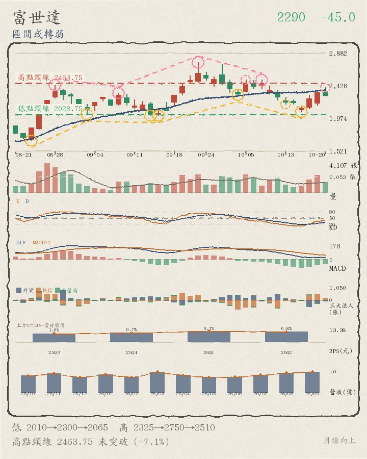
今天收黑、成交量也比平均少、跌破月線 2368.25，離高點頸線 2463.75 還差 7.1%，轉折還沒走出明顯方向。
- 月線位置：收盤 2290 在月線 2368.25 之下；5 日線 2237 也在月線之下（短均在下）；月線向上、5 日線走平或向下
- 量能：成交量是 20 日均量的 0.87 倍，比 20 日均量少一些
- 關鍵價位：高點頸線 2463.75 還沒突破，差 7.1%；最近轉折高點 2510（低於 8.8%）；最近轉折低點 2065（高於 10.9%）
- 轉折結構：低點 2010、2300、2065 與高點 2325、2750、2510 都沒有明顯遞增，屬於區間震盪或轉弱；還沒確認的轉折低點 10-13 2170；還沒確認的轉折高點 10-05 2510、10-20 2400（圖上虛線小圈）
高點墊高、底部不穩 成交金額 33.56 億・全榜第 59 名（上市第 46 名）
好條件 1/8：頭頭高
不好條件 6/8：跌破前低、今日下跌、相對大盤弱、在月線之下、外資賣超、月線下彎
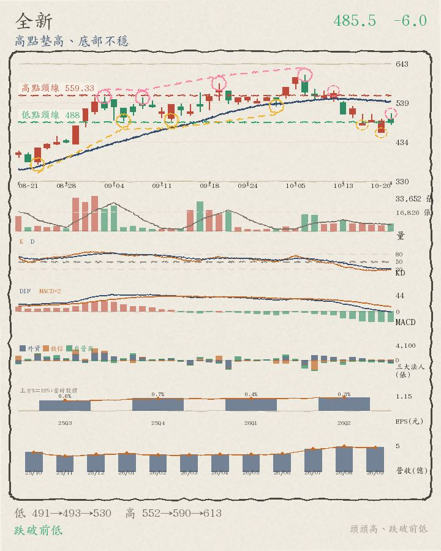
今天收黑、成交量也比平均少、跌破月線 542.025，跌破前一個轉折低點（高點頸線 559.33 還在收盤上方），高點還在墊高（但底部沒同步墊高）。
- 月線位置：收盤 485.5 在月線 542.025 之下；5 日線 495.3 也在月線之下（短均在下）；月線走平或向下、5 日線走平或向下
- 量能：成交量是 20 日均量的 0.77 倍，比 20 日均量少很多
- 關鍵價位：高點頸線 559.33 還沒突破、還在收盤上方 13.2%；最近轉折高點 613（低於 20.8%）；最近轉折低點 530（低於 8.4%）
- 轉折結構：高點 552、590、613 墊高 11.1%（頭頭高），但低點 491、493、530 沒有同步墊高；還沒確認的轉折低點 10-15 480、10-19 459；還沒確認的轉折高點 10-12 571、10-20 510（圖上虛線小圈）
高點墊高、底部不穩 成交金額 33.15 億・全榜第 60 名（上市第 47 名）
好條件 2/8：月線向上、頭頭高
不好條件 4/8：今日下跌、相對大盤弱、在月線之下、外資賣超
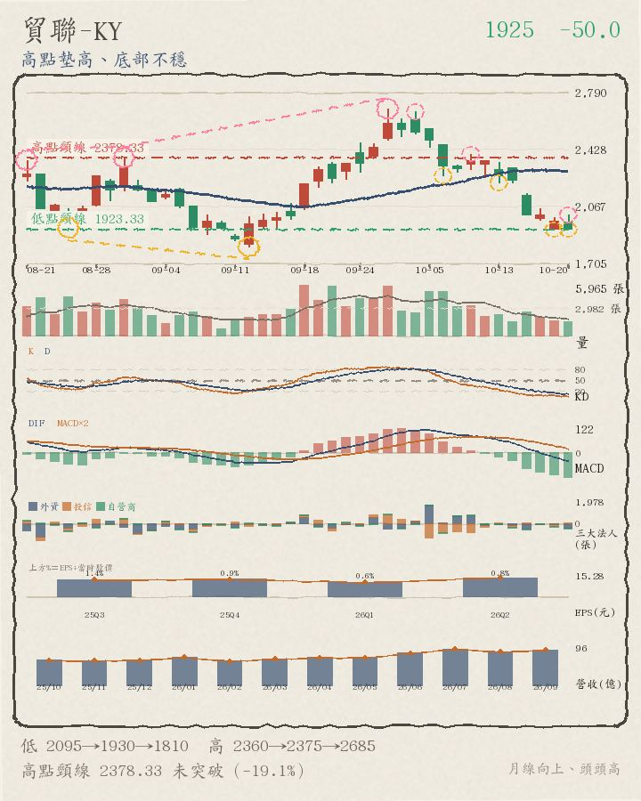
今天收黑、成交量也比平均少、跌破月線 2291.75，離高點頸線 2378.33 還差 19.1%，高點還在墊高（但底部沒同步墊高）。
- 月線位置：收盤 1925 在月線 2291.75 之下；5 日線 2033 也在月線之下（短均在下）；月線向上、5 日線走平或向下
- 量能：成交量是 20 日均量的 0.46 倍，比 20 日均量少很多
- 關鍵價位：高點頸線 2378.33 還沒突破，差 19.1%；最近轉折高點 2685（低於 28.3%）；最近轉折低點 1810（高於 6.4%）
- 轉折結構：高點 2360、2375、2685 墊高 13.8%（頭頭高），但低點 2095、1930、1810 沒有同步墊高；還沒確認的轉折低點 10-19 1920、10-20 1920；還沒確認的轉折高點 10-08 2400、10-20 2015（圖上虛線小圈）
剛突破前高 成交金額 27.49 億・全榜第 65 名（上市第 48 名）
好條件 6/8：站上月線、月線向上、頭頭高、突破頸線、相對大盤強、量價攻擊（收紅＋大量）
不好條件 1/8：外資賣超
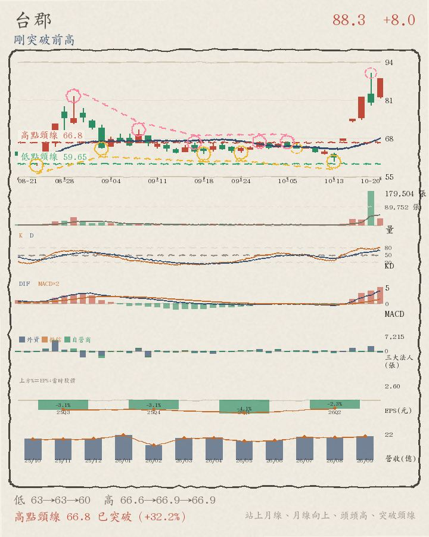
今天帶量收紅、站上月線 68.1，已站上高點頸線 66.8，高點還在墊高（但底部沒同步墊高）。
- 月線位置：收盤 88.3 在月線 68.1 之上；5 日線 78.62 也在月線之上（短均在上）；月線向上、5 日線向上
- 量能：成交量是 20 日均量的 2.24 倍，比 20 日均量大不少；收紅又量增，量價配合
- 關鍵價位：高點頸線 66.8 已站上；最近轉折高點 66.9（高於 32.0%）；最近轉折低點 60.3（高於 46.4%）
- 轉折結構：高點 66.6、66.9、66.9 墊高 34.5%（頭頭高），但低點 63、63.3、60.3 沒有同步墊高；還沒確認的轉折低點 10-06 64.7；還沒確認的轉折高點 10-19 90（圖上虛線小圈）
區間或轉弱 成交金額 27.43 億・全榜第 66 名（上市第 49 名）
好條件 1/8：外資買超
不好條件 5/8：跌破前低、今日下跌、相對大盤弱、在月線之下、月線下彎
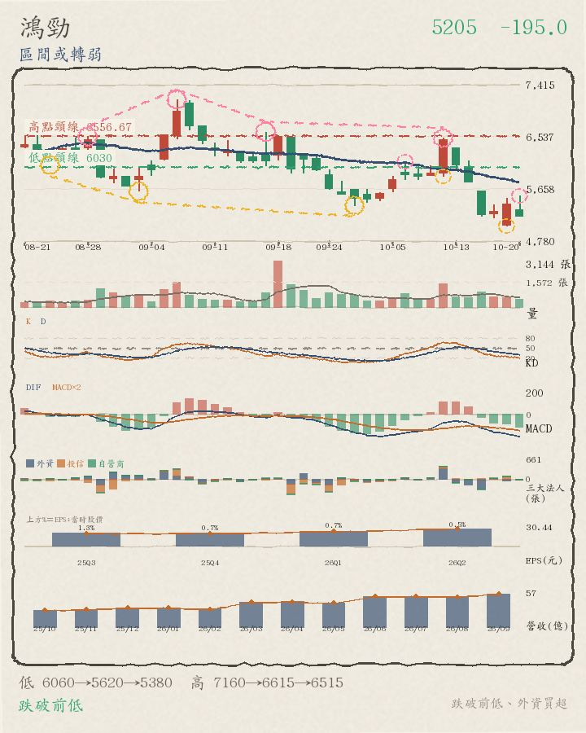
今天收黑、成交量也比平均少、跌破月線 5774.25，跌破前一個轉折低點（高點頸線 6556.67 還在收盤上方），轉折還沒走出明顯方向。
- 月線位置：收盤 5205 在月線 5774.25 之下；5 日線 5379 也在月線之下（短均在下）；月線走平或向下、5 日線走平或向下
- 量能：成交量是 20 日均量的 0.55 倍，比 20 日均量少很多
- 關鍵價位：高點頸線 6556.67 還沒突破、還在收盤上方 20.6%；最近轉折高點 6515（低於 20.1%）；最近轉折低點 5380（低於 3.3%）
- 轉折結構：低點 6060、5620、5380 與高點 7160、6615、6515 都沒有明顯遞增，屬於區間震盪或轉弱；還沒確認的轉折低點 10-12 5870、10-19 5035；還沒確認的轉折高點 10-06 6115、10-20 5540（圖上虛線小圈）
矽力*-KY 6415 上市
462.5 -13.0
底部墊高、突破前高 成交金額 27.23 億・全榜第 67 名（上市第 50 名）
好條件 4/8：站上月線、月線向上、底底高、頭頭高
不好條件 4/8：今日下跌、相對大盤弱、量增下跌（出貨）、外資賣超
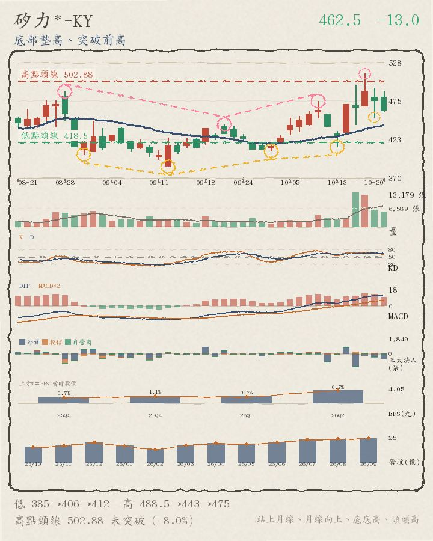
今天帶量收黑、站上月線 442.3，離高點頸線 502.88 還差 8.0%，轉折結構仍是底底高＋頭頭高。
- 月線位置：收盤 462.5 在月線 442.3 之上；5 日線 472.9 也在月線之上（短均在上）；月線向上、5 日線向上
- 量能：成交量是 20 日均量的 1.61 倍，比 20 日均量大不少；收黑卻量增，量價背離
- 關鍵價位：高點頸線 502.88 還沒突破，差 8.0%；最近轉折高點 475（低於 2.6%）；最近轉折低點 412（高於 12.3%）
- 轉折結構：低點 385、406.5、412 一路墊高 7.0%、高點 488.5、443、475 也一路墊高 8.0%，是底底高＋頭頭高；還沒確認的轉折低點 10-19 453；還沒確認的轉折高點 10-16 513（圖上虛線小圈）
底部墊高、突破前高 成交金額 294.48 億・全榜第 3 名（上櫃第 1 名）
好條件 6/8：站上月線、月線向上、底底高、頭頭高、突破頸線、相對大盤強
不好條件 2/8：量增下跌（出貨）、外資賣超
今天帶量收黑、站上月線 128.15，已站上高點頸線 138.33，轉折結構仍是底底高＋頭頭高。
- 月線位置：收盤 154 在月線 128.15 之上；5 日線 141.9 也在月線之上（短均在上）；月線向上、5 日線向上
- 量能：成交量是 20 日均量的 2.62 倍，比 20 日均量大不少；收黑卻量增，量價背離
- 關鍵價位：高點頸線 138.33 已站上；最近轉折高點 129.5（高於 18.9%）；最近轉折低點 124（高於 24.2%）
- 轉折結構：低點 111、113、124 一路墊高 11.7%、高點 89.4284、135、129.5 也一路墊高 24.7%，是底底高＋頭頭高；還沒確認的轉折低點 10-15 125；還沒確認的轉折高點 10-14 140.5、10-20 161.5（圖上虛線小圈）
高點墊高、底部不穩 成交金額 142.74 億・全榜第 13 名（上櫃第 2 名）
好條件 2/8：月線向上、頭頭高
不好條件 4/8：今日下跌、相對大盤弱、在月線之下、外資賣超
今天收黑、成交量也比平均少、跌破月線 1595，離高點頸線 1786.67 還差 13.2%，高點還在墊高（但底部沒同步墊高）。
- 月線位置：收盤 1550 在月線 1595 之下；5 日線 1631 也在月線之上（短均在上）；月線向上、5 日線走平或向下
- 量能：成交量是 20 日均量的 0.92 倍，比 20 日均量少一些
- 關鍵價位：高點頸線 1786.67 還沒突破，差 13.2%；最近轉折高點 1835（低於 15.5%）；最近轉折低點 1275（高於 21.6%）
- 轉折結構：高點 1430、1460、1835 墊高 28.3%（頭頭高），但低點 1395、1295、1275 沒有同步墊高；還沒確認的轉折低點 10-13 1595、10-19 1500；還沒確認的轉折高點 10-14 1745、10-20 1650（圖上虛線小圈）
區間或轉弱 成交金額 123.42 億・全榜第 20 名（上櫃第 3 名）
好條件 2/8：月線向上、外資買超
不好條件 4/8：跌破前低、今日下跌、相對大盤弱、在月線之下
今天收黑、跌破月線 534.175，跌破前一個轉折低點（高點頸線 485 還在收盤上方），轉折還沒走出明顯方向。
- 月線位置：收盤 475 在月線 534.175 之下；5 日線 503.4 也在月線之下（短均在下）；月線向上、5 日線走平或向下
- 量能：成交量是 20 日均量的 0.98 倍，跟 20 日均量差不多
- 關鍵價位：高點頸線 485 還沒突破、還在收盤上方 2.1%；最近轉折高點 630（低於 24.6%）；最近轉折低點 482（低於 1.5%）
- 轉折結構：低點 438.5、420、482 與高點 492、478、630 都沒有明顯遞增，屬於區間震盪或轉弱；還沒確認的轉折低點 10-13 522、10-19 454；還沒確認的轉折高點 10-14 570、10-20 517（圖上虛線小圈）
區間或轉弱 成交金額 91.49 億・全榜第 28 名（上櫃第 4 名）
好條件 1/8：月線向上
不好條件 5/8：跌破前低、今日下跌、相對大盤弱、在月線之下、外資賣超
今天收黑、成交量也比平均少、跌破月線 1021.5，跌破前一個轉折低點（高點頸線 1018.75 還在收盤上方），轉折還沒走出明顯方向。
- 月線位置：收盤 844 在月線 1021.5 之下；5 日線 914.2 也在月線之下（短均在下）；月線向上、5 日線走平或向下
- 量能：成交量是 20 日均量的 0.80 倍，比 20 日均量少很多
- 關鍵價位：高點頸線 1018.75 還沒突破、還在收盤上方 17.2%；最近轉折高點 1260（低於 33.0%）；最近轉折低點 872（低於 3.2%）
- 轉折結構：低點 931、875、872 與高點 1015、1010、1260 都沒有明顯遞增，屬於區間震盪或轉弱；還沒確認的轉折低點 10-06 1145、10-19 838；還沒確認的轉折高點 10-20 890（圖上虛線小圈）
底部墊高、未過前高 成交金額 80.89 億・全榜第 30 名（上櫃第 5 名）
好條件 1/8：底底高
不好條件 7/8：跌破前低、今日下跌、相對大盤弱、在月線之下、量增下跌（出貨）、外資賣超、月線下彎
今天帶量收黑、跌破月線 505.825，跌破前一個轉折低點（高點頸線 571 還在收盤上方），底部還在墊高（但高點沒同步創高）。
- 月線位置：收盤 469.5 在月線 505.825 之下；5 日線 477.8 也在月線之下（短均在下）；月線走平或向下、5 日線走平或向下
- 量能：成交量是 20 日均量的 1.43 倍，比 20 日均量大不少；收黑卻量增，量價背離
- 關鍵價位：高點頸線 571 還沒突破、還在收盤上方 17.8%；最近轉折高點 578（低於 18.8%）；最近轉折低點 477（低於 1.6%）
- 轉折結構：低點 399、469.5、477 墊高 19.5%（底底高），但高點 564、535、578 沒有同步創高；還沒確認的轉折低點 10-15 453、10-19 447.5；還沒確認的轉折高點 10-20 510（圖上虛線小圈）
區間或轉弱 成交金額 73.63 億・全榜第 34 名（上櫃第 6 名）
好條件 0/8：無
不好條件 8/8：跌破前低、今日下跌、相對大盤弱、在月線之下、量增下跌（出貨）、外資賣超、月線下彎、收盤跌破前一日低點
今天帶量收黑、跌破月線 5460.75，跌破前一個轉折低點（高點頸線 5842.5 還在收盤上方），轉折還沒走出明顯方向。
- 月線位置：收盤 4900 在月線 5460.75 之下；5 日線 5305 也在月線之下（短均在下）；月線走平或向下、5 日線走平或向下
- 量能：成交量是 20 日均量的 1.78 倍，比 20 日均量大不少；收黑卻量增，量價背離
- 關鍵價位：高點頸線 5842.5 還沒突破、還在收盤上方 16.1%；最近轉折高點 6160（低於 20.5%）；最近轉折低點 4995（低於 1.9%）
- 轉折結構：低點 5365、5090、4995 與高點 6060、5860、6160 都沒有明顯遞增，屬於區間震盪或轉弱；還沒確認的轉折低點 10-16 4950、10-20 4865；還沒確認的轉折高點 10-07 5725、10-20 5370（圖上虛線小圈）
區間或轉弱 成交金額 56.53 億・全榜第 42 名（上櫃第 7 名）
好條件 1/8：外資買超
不好條件 7/8：跌破前低、今日下跌、相對大盤弱、在月線之下、量增下跌（出貨）、月線下彎、收盤跌破前一日低點
今天帶量收黑、跌破月線 307.881，跌破前一個轉折低點（高點頸線 301.44 還在收盤上方），轉折還沒走出明顯方向。
- 月線位置：收盤 259 在月線 307.881 之下；5 日線 287.377 也在月線之下（短均在下）；月線走平或向下、5 日線走平或向下
- 量能：成交量是 20 日均量的 1.57 倍，比 20 日均量大不少；收黑卻量增，量價背離
- 關鍵價位：高點頸線 301.44 還沒突破、還在收盤上方 14.1%；最近轉折高點 302.128（低於 14.3%）；最近轉折低點 302.128（低於 14.3%）
- 轉折結構：低點 302.128、302.128、302.128 與高點 302.128、302.128、302.128 都沒有明顯遞增，屬於區間震盪或轉弱；還沒確認的轉折低點 10-15 302.128、10-20 248；還沒確認的轉折高點 10-16 302.128、10-20 298（圖上虛線小圈）
高點墊高、底部不穩 成交金額 54.61 億・全榜第 43 名（上櫃第 8 名）
好條件 1/8：頭頭高
不好條件 6/8：跌破前低、今日下跌、相對大盤弱、在月線之下、外資賣超、月線下彎
今天收黑、成交量也比平均少、跌破月線 2789.25，跌破前一個轉折低點（高點頸線 2931.67 還在收盤上方），高點還在墊高（但底部沒同步墊高）。
- 月線位置：收盤 2490 在月線 2789.25 之下；5 日線 2625 也在月線之下（短均在下）；月線走平或向下、5 日線走平或向下
- 量能：成交量是 20 日均量的 0.72 倍，比 20 日均量少很多
- 關鍵價位：高點頸線 2931.67 還沒突破、還在收盤上方 15.1%；最近轉折高點 3210（低於 22.4%）；最近轉折低點 2585（低於 3.7%）
- 轉折結構：高點 2930、2950、3210 墊高 9.6%（頭頭高），但低點 1450、2650、2585 沒有同步墊高；還沒確認的轉折低點 10-19 2385；還沒確認的轉折高點 10-14 2915、10-20 2620（圖上虛線小圈）
高點墊高、底部不穩 成交金額 47.6 億・全榜第 46 名（上櫃第 9 名）
好條件 4/8：月線向上、頭頭高、相對大盤強、外資買超
不好條件 1/8：在月線之下
今天收紅、但成交量比平均少、跌破月線 1516.75，離高點頸線 1477.5 還差 5.6%，高點還在墊高（但底部沒同步墊高）。
- 月線位置：收盤 1395 在月線 1516.75 之下；5 日線 1420 也在月線之下（短均在下）；月線向上、5 日線走平或向下
- 量能：成交量是 20 日均量的 0.90 倍，比 20 日均量少一些；收紅但量縮，量價背離
- 關鍵價位：高點頸線 1477.5 還沒突破，差 5.6%；最近轉折高點 1750（低於 20.3%）；最近轉折低點 1395（高於 0.0%）
- 轉折結構：高點 1080、1505、1750 墊高 62.0%（頭頭高），但低點 1240、1480、1395 沒有同步墊高；還沒確認的轉折低點 10-05 1490、10-19 1320；還沒確認的轉折高點 10-08 1570、10-20 1450（圖上虛線小圈）
底部墊高、未過前高 成交金額 44.01 億・全榜第 48 名（上櫃第 10 名）
好條件 3/8：月線向上、底底高、外資買超
不好條件 5/8：跌破前低、今日下跌、相對大盤弱、在月線之下、量增下跌（出貨）
今天收黑、跌破月線 465.325，跌破前一個轉折低點（高點頸線 497 還在收盤上方），底部還在墊高（但高點沒同步創高）。
- 月線位置：收盤 428 在月線 465.325 之下；5 日線 450.2 也在月線之下（短均在下）；月線向上、5 日線走平或向下
- 量能：成交量是 20 日均量的 1.02 倍，跟 20 日均量差不多
- 關鍵價位：高點頸線 497 還沒突破、還在收盤上方 13.9%；最近轉折高點 530（低於 19.2%）；最近轉折低點 436.5（低於 1.9%）
- 轉折結構：低點 289、407、436.5 墊高 51.0%（底底高），但高點 496、487、530 沒有同步創高；還沒確認的轉折低點 10-13 444、10-19 399；還沒確認的轉折高點 10-14 508、10-20 449.5（圖上虛線小圈）
底部墊高、未過前高 成交金額 43.15 億・全榜第 50 名（上櫃第 11 名）
好條件 2/8：月線向上、底底高
不好條件 5/8：跌破前低、今日下跌、相對大盤弱、在月線之下、外資賣超
今天收黑、成交量也比平均少、跌破月線 218.55，跌破前一個轉折低點（高點頸線 234 還在收盤上方），底部還在墊高（但高點沒同步創高）。
- 月線位置：收盤 202.5 在月線 218.55 之下；5 日線 212.9 也在月線之下（短均在下）；月線向上、5 日線走平或向下
- 量能：成交量是 20 日均量的 0.54 倍，比 20 日均量少很多
- 關鍵價位：高點頸線 234 還沒突破、還在收盤上方 13.5%；最近轉折高點 238（低於 14.9%）；最近轉折低點 211（低於 4.0%）
- 轉折結構：低點 171、208、211 墊高 23.4%（底底高），但高點 233、238、238 沒有同步創高；還沒確認的轉折低點 10-13 216.5、10-19 194.5；還沒確認的轉折高點 10-14 233、10-20 215（圖上虛線小圈）
高點墊高、底部不穩 成交金額 42.09 億・全榜第 51 名（上櫃第 12 名）
好條件 2/8：月線向上、頭頭高
不好條件 4/8：今日下跌、相對大盤弱、在月線之下、外資賣超
今天收黑、成交量也比平均少、跌破月線 257.325，離高點頸線 290.5 還差 15.0%，高點還在墊高（但底部沒同步墊高）。
- 月線位置：收盤 247 在月線 257.325 之下；5 日線 261.9 也在月線之上（短均在上）；月線向上、5 日線向上
- 量能：成交量是 20 日均量的 0.82 倍，比 20 日均量少很多
- 關鍵價位：高點頸線 290.5 還沒突破，差 15.0%；最近轉折高點 291.5（低於 15.3%）；最近轉折低點 238（高於 3.8%）
- 轉折結構：高點 251.5、289.5、291.5 墊高 15.9%（頭頭高），但低點 220、238、238 沒有同步墊高；還沒確認的轉折低點 10-08 243、10-19 241.5；還沒確認的轉折高點 10-12 277、10-20 263.5（圖上虛線小圈）
底部墊高、突破前高 成交金額 38.51 億・全榜第 54 名（上櫃第 13 名）
好條件 6/8：站上月線、月線向上、底底高、頭頭高、突破頸線、外資買超
不好條件 3/8：今日下跌、相對大盤弱、量增下跌（出貨）
今天帶量收黑、站上月線 54.162，已站上高點頸線 56.65，轉折結構仍是底底高＋頭頭高。
- 月線位置：收盤 62.1 在月線 54.162 之上；5 日線 59.42 也在月線之上（短均在上）；月線向上、5 日線向上
- 量能：成交量是 20 日均量的 11.27 倍，比 20 日均量大不少；收黑卻量增，量價背離
- 關鍵價位：高點頸線 56.65 已站上；最近轉折高點 57.8（高於 7.4%）；最近轉折低點 50.8（高於 22.2%）
- 轉折結構：低點 49.05、49.45、50.8 一路墊高 3.6%、高點 53.2、53.2、57.8 也一路墊高 18.3%，是底底高＋頭頭高；還沒確認的轉折低點 10-15 51.5；還沒確認的轉折高點 10-14 55.5、10-20 68.4（圖上虛線小圈）
區間或轉弱 成交金額 32.62 億・全榜第 61 名（上櫃第 14 名）
好條件 1/8：月線向上
不好條件 4/8：今日下跌、相對大盤弱、在月線之下、外資賣超
今天收黑、成交量也比平均少、跌破月線 1388.75，離高點頸線 1440 還差 8.3%，轉折還沒走出明顯方向。
- 月線位置：收盤 1320 在月線 1388.75 之下；5 日線 1413 也在月線之上（短均在上）；月線向上、5 日線走平或向下
- 量能：成交量是 20 日均量的 0.88 倍，比 20 日均量少一些
- 關鍵價位：高點頸線 1440 還沒突破，差 8.3%；最近轉折高點 1680（低於 21.4%）；最近轉折低點 1180（高於 11.9%）
- 轉折結構：低點 1185、1180、1180 與高點 1435、1270、1680 都沒有明顯遞增，屬於區間震盪或轉弱；還沒確認的轉折低點 10-08 1490、10-20 1310；還沒確認的轉折高點 10-06 1590、10-20 1430（圖上虛線小圈）
區間或轉弱 成交金額 32.17 億・全榜第 62 名（上櫃第 15 名）
好條件 0/8：無
不好條件 6/8：今日下跌、相對大盤弱、在月線之下、量增下跌（出貨）、外資賣超、月線下彎
今天帶量收黑、跌破月線 3224，離高點頸線 3347.5 還差 7.5%，轉折還沒走出明顯方向。
- 月線位置：收盤 3095 在月線 3224 之下；5 日線 3104 也在月線之下（短均在下）；月線走平或向下、5 日線走平或向下
- 量能：成交量是 20 日均量的 1.14 倍，比 20 日均量大一些；收黑卻量增，量價背離
- 關鍵價位：高點頸線 3347.5 還沒突破，差 7.5%；最近轉折高點 3580（低於 13.5%）；最近轉折低點 3000（高於 3.2%）
- 轉折結構：低點 3165、2960、3000 與高點 3935、3775、3580 都沒有明顯遞增，屬於區間震盪或轉弱；還沒確認的轉折低點 10-16 2825；還沒確認的轉折高點 10-14 3385、10-20 3310（圖上虛線小圈）
剛突破前高 成交金額 30.77 億・全榜第 63 名（上櫃第 16 名）
好條件 3/8：站上月線、月線向上、頭頭高
不好條件 4/8：今日下跌、相對大盤弱、量增下跌（出貨）、外資賣超
今天帶量收黑、站上月線 87.605，離高點頸線 100.9 還差 5.2%，高點還在墊高（但底部沒同步墊高）。
- 月線位置：收盤 95.7 在月線 87.605 之上；5 日線 94.58 也在月線之上（短均在上）；月線向上、5 日線向上
- 量能：成交量是 20 日均量的 5.02 倍，比 20 日均量大不少；收黑卻量增，量價背離
- 關鍵價位：高點頸線 100.9 還沒突破，差 5.2%；最近轉折高點 102（低於 6.2%）；最近轉折低點 80.3（高於 19.2%）
- 轉折結構：高點 88.8、86.2、102 墊高 3.4%（頭頭高），但低點 76.8、81.4、80.3 沒有同步墊高；還沒確認的轉折低點 10-15 89.2、10-19 89.5；還沒確認的轉折高點 10-14 99.8、10-20 105.5（圖上虛線小圈）
剛突破前高 成交金額 29.37 億・全榜第 64 名（上櫃第 17 名）
好條件 6/8：站上月線、月線向上、頭頭高、突破頸線、相對大盤強、量價攻擊（收紅＋大量）
不好條件 1/8：外資賣超
今天帶量收紅、站上月線 191.375，已站上高點頸線 214.25，高點還在墊高（但底部沒同步墊高）。
- 月線位置：收盤 228.5 在月線 191.375 之上；5 日線 207.6 也在月線之上（短均在上）；月線向上、5 日線向上
- 量能：成交量是 20 日均量的 2.51 倍，比 20 日均量大不少；收紅又量增，量價配合
- 關鍵價位：高點頸線 214.25 已站上；最近轉折高點 215（高於 6.3%）；最近轉折低點 168（高於 36.0%）
- 轉折結構：高點 203.5、195、215 墊高 6.3%（頭頭高），但低點 156、176、168 沒有同步墊高；還沒確認的轉折低點 10-15 189、10-19 184；還沒確認的轉折高點 10-14 213.5、10-20 228.5（圖上虛線小圈）
區間或轉弱 成交金額 26.11 億・全榜第 68 名（上櫃第 18 名）
好條件 2/8：相對大盤強、外資買超
不好條件 3/8：跌破前低、在月線之下、月線下彎
今天收黑、成交量也比平均少、跌破月線 2049.5，跌破前一個轉折低點（高點頸線 1922.5 還在收盤上方），轉折還沒走出明顯方向。
- 月線位置：收盤 1845 在月線 2049.5 之下；5 日線 1875 也在月線之下（短均在下）；月線走平或向下、5 日線走平或向下
- 量能：成交量是 20 日均量的 0.49 倍，比 20 日均量少很多
- 關鍵價位：高點頸線 1922.5 還沒突破、還在收盤上方 4.0%；最近轉折高點 2350（低於 21.5%）；最近轉折低點 2080（低於 11.3%）
- 轉折結構：低點 1970、1900、2080 與高點 2195、2160、2350 都沒有明顯遞增，屬於區間震盪或轉弱；還沒確認的轉折低點 10-15 1800、10-19 1785；還沒確認的轉折高點 10-16 1950、10-20 1895（圖上虛線小圈）
上升趨勢（底底高＋頭頭高） 成交金額 25.77 億・全榜第 69 名（上櫃第 19 名）
好條件 7/8：站上月線、月線向上、底底高、頭頭高、相對大盤強、外資買超、量價攻擊（收紅＋大量）
不好條件 0/8：無
今天帶量收紅、站上月線 134.9，離高點頸線 142.5 還差 5.3%，轉折結構仍是底底高＋頭頭高。
- 月線位置：收盤 135 在月線 134.9 之上；5 日線 133.6 也在月線之下（短均在下）；月線向上、5 日線走平或向下
- 量能：成交量是 20 日均量的 1.67 倍，比 20 日均量大不少；收紅又量增，量價配合
- 關鍵價位：高點頸線 142.5 還沒突破，差 5.3%；最近轉折高點 158（低於 14.6%）；最近轉折低點 104（高於 29.8%）
- 轉折結構：低點 96.2、103、104 一路墊高 8.1%、高點 114.5、123、158 也一路墊高 38.0%，是底底高＋頭頭高；還沒確認的轉折低點 10-13 129.5、10-19 124；還沒確認的轉折高點 10-14 140、10-20 145（圖上虛線小圈）
區間或轉弱 成交金額 23.31 億・全榜第 70 名（上櫃第 20 名）
好條件 1/8：月線向上
不好條件 4/8：今日下跌、相對大盤弱、在月線之下、外資賣超
今天收黑、成交量也比平均少、跌破月線 121.025，離高點頸線 138.5 還差 24.2%，轉折還沒走出明顯方向。
- 月線位置：收盤 105 在月線 121.025 之下；5 日線 110.4 也在月線之下（短均在下）；月線向上、5 日線走平或向下
- 量能：成交量是 20 日均量的 0.29 倍，比 20 日均量少很多
- 關鍵價位：高點頸線 138.5 還沒突破，差 24.2%；最近轉折高點 140（低於 25.0%）；最近轉折低點 100（高於 5.0%）
- 轉折結構：低點 103.5、104、100 與高點 125、140、140 都沒有明顯遞增，屬於區間震盪或轉弱；還沒確認的轉折低點 10-13 113.5、10-19 103.5；還沒確認的轉折高點 10-07 135.5、10-20 111（圖上虛線小圈）